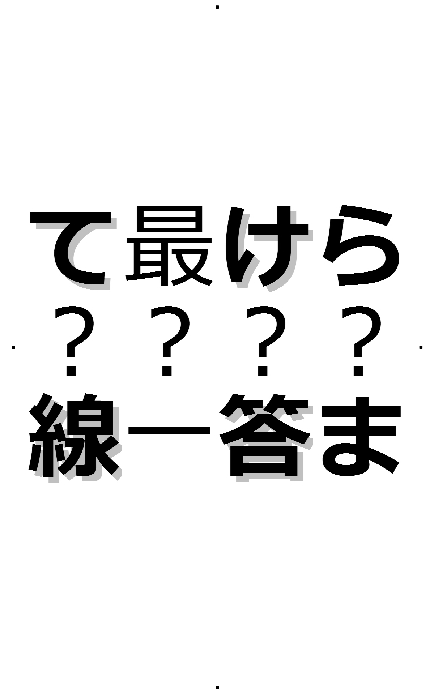

| Ｄｏｍｉｎｏ ナゾトキブック (幻想迷宮ゲームブック) | |
| ニチョ謎制作チーム | |
| GENSOUMEIKYUU SHOTEN (2017) | |
幻想迷宮ゲームブック
Ｄｏｍｉｎｏ
ニチョ謎制作チーム
序
人生なんてドミノ倒しみたいなもんだ。決まった数の牌を持って生まれ、子供の頃にせっせと増やしてせっせと立てて、目標が決まったらそれに向けてまたせっせとせっせと。ある程度になったら最初の一つの背中を押す。計画的な生き方をしてきた奴の結果は当然大きく綺麗なものになり、そうでない奴はそうでないなりの結果しか生まない。そして最後の一枚が倒れたときが、人生の終焉だ。
努力が実を結べば手持ちの牌が増える。他のドミノと寄り添って重なれば彩りが増える。新しい色が生まれるかもしれない。濃厚なドミノは他のドミノを飲み込んで大きく豊かになっていく。
失敗すればまた一から立て直し。やり直しができるのは始めのうちだけ。後半にもなると、色んなところで綻
び、崩
れ、下手すると全てが台無しになってしまう。ああ、恐ろしい。
いざ倒してみても倒れきるまでは何があるか分からない。雑に並べたところでは牌が上手くつながらないだろうな。ケチって間を開けすぎてもそれは起こる。なぜケチるかって？ 手持ちの牌が少ないからだ。増やす努力をしなかった者、努力はしているけれど横から掠
め取られていく者、倒れて立ててを繰り返していくうちに牌をなくしてしまう者、理由は様々だ。
増える理由だっていろいろあるんだろうな。努力で増えるのはもちろん、掠め取ることも可能、幸運にも棚からドミノが降ってくることもあるだろう。
俺の人生はどんな理由でこんな単調なものになってしまったのか。並べてるそばからつまずきその度に立て直した覚えはあるが、それにしたってこの牌の少なさは一体なぜなんだろうか。寄り添ってくれる流れも見当たらない。見えるのは手元に残っている数枚のドミノと、いまだに最初の一枚を倒すことすらできていないという事実だけだ。
ああ、それともう一つ。何も乗っていないと思われた俺の頭上の棚には、どうやらドミノが詰まった箱が置いてあるらしいということだ。
ナゾトキブックの楽しみ方
この本はただの小説ではありません。あなたは"ゲームブック"をご存じでしょうか。知っている人も知らない人も、少しだけお時間をちょうだいして、これからする説明をお聞きください。
はじめて聞く人は、もしかするとコンピューターゲームの攻略本の類
と思われるかもしれませんが、そうではありません。
ゲームブックとは小説とゲームが融合したものです。普通の小説なら、まず最初のページから順番に読み進めるところですが、ゲームブックは違うのです。
ゲームブックでは、読みはじめこそ小説と同じように、最初から読んでいくのですが、物語の中で選
択
肢
が登場したときは、読者であるあなた
が行動を選び、それが物語の続きになるのです。選択肢を選ぶときはその選択肢の文言をタップすることで、自動的に本のいろんなところに読む場所が変わり、お話が繋
がっていきます。これを"パラグラフジャンプ"と呼びます。選択肢を選ばずに、そのまま普通にページをめくっていくとお話が繋がらなくなってしまいますから、注意してくださいね。
ひとつのエピソードの終わりには必ず"▲
"のマークが登場します。この印が見えるところまで読んだら、そのままページをめくらず、パラグラフジャンプをしなければいけません。
ナゾトキブックである本書はゲームブックの仲間には違いないのですが、大きな特色として、難易度の高い謎解きやパズルがたくさん登場し、その答えは選択肢から選ぶのではなく、あなた自身が単語を入力して解答します。その具体的な方法は後述することにして、今はお話の続きが気になりますよね？ 物語は始まったばかりなので、このままページをめくっても、普通に続きを読むことができますが、せっかくですから、左にある「第一章 青と赤」へという文字をタップしてパラグラフジャンプしてみましょう。
第一章 青と赤
俺は色のない部屋の中で目を覚ました。薬の余韻で頭はぼんやりとしている。あー、あー、俺の名前は若
菜
蒼
。独身貴族の中年サラリーマン。よし、大丈夫だ。
「暗い......」
呟
きは部屋に吸い込まれた。何もない部屋なのに音は響かない。飲み込んでいるつもりの状況だったが、起きぬけの頭はそれを上手く飲み込みきれていなかった。当然といえば当然か。
俺はここから脱出して、ドミノの箱を手に入れなければいけない。
ここに来るに至った出来事から話そう。
人間はいつの時代も大金を目の前にすると本性を現すものだ。俺はいつもそう思っている。どんな聖人君子だって、金屏風
の裏じゃ何をたくらんでいるか分からない。倫理観を説くつもりはない。あくまでも個人の感想ですって奴だ。かくいう俺だって大金に目をくらませた一人だ。
何をやってもついていなかった。仕事も遊びもギャンブルも、血縁友人恋人何もかもだ。前向きに努力をする、なんてことはとうの昔に忘れたよ。だからって犯罪に手を染めるようなことはしていない。ようは世間を羨
む一般小市民ってとこだ。
その日も、終電を逃して駅のベンチで呆然としていた。同僚のポカの尻拭
いで遅れるなんて、さえない理由だ。うわべの感謝をもらったって嬉しくもなんともない。
仕方なくベンチに腰を下ろした。そういえば駅でベンチに座るのなんて初めてかもしれないな。人気がなくなった駅のホームは、これから一日の疲れを取る時間に入るのだろう。駅員がベンチでうなだれている人に順番に声をかけている。
俺の目の前にも人が立った。
「あなた、」
「はいはい、今」
行きますよ、と言葉を続けようとしたとき、目の前の人は予想と違う言葉を発した。
「今、ついてないな、と思っていたでしょう」
俺は顔を上げてその人物を見た。駅員とは違う格好。しわ一つない白衣を着た人物が、俺を見下ろしていた。なんだ、駅員じゃないのか。
「あぁ、当たり前だ。終電を逃したんだ」
俺は鼻でため息をつきながら視線を元に戻した。
「それだけですか？」
白衣の男は言葉を続けた。日ごろから考えていることを見透かされたようで驚いたが、表情に出さずに
「何もかもさ」
と言い返した。
隣のベンチで寝ている人を起こしに駅員がやってきた。俺は立ち上がった。
「あんたも早いとこ出たほうがいいぞ」
駅員は何か言いたげにこっちを見ていたが、俺はさっさとその場を立ち去った。
モバイルの入場記録を取り消してもらい外に出る。タクシープールの長蛇の列を見てため息をつく。この行列の様子だと乗れて一時間後、か。ちらりとモバイルで時間を確認する。そして頭の中で計算する。大金払って深夜に帰って、周りのお宅に気を使いながら静かに寝るか、やっすいホテルのかったいベッドで眠るか、それとも他に方法はないか。
頭の中でそろばんを弾いているとさっきの男が声をかけてきた。
「今、お時間良いですか？」
先ほどと同じように、何の躊躇もなく。
俺は振り返り白衣の男を見た。第一印象は白衣。神経質そうな顔色をして、神経質そうな眼鏡をかけて、神経質そうなネクタイをしている。第二印象は神経質そう。
「俺に何か用でもあるのか」
少しぶっきらぼうに言った。終電を逃してイラついているわけだ。ぶっきらぼうでも文句あるまい。まぁ、この男に八つ当たりしても仕方がないのは分かっている。
「はい」
男は俺の様子など気にもしない風に返事をした。
「あなたの不幸話に興味があるのです」
俺は男に招かれるまま、駅に近いビルの一室にいた。そして聞きたがっていた不幸話を滔々
と語ってやった。ドミノ倒しの話も交えながら、普段から俺がどんなことを考えて何を思って生きているのか。知り合いに面と向かって話す話ではないことは知っている。さすがにそんな厚顔無恥ではない。だが、初対面の奴なら、今後二度と会うことのないような奴なら恥も外聞も知ったことではない。
男は興味深そうに俺の話を聞いていた。途中相槌やコメントをはさみつつも、喋っているのは俺がほとんどだった。
「......というわけでさ、俺はこれまでの人生、全くついていなかったわけだよ」
俺はそう言って、冷たくなった四杯目のコーヒーを飲み干した。そのあと、大きく息を吐いた。なんか、少しだけ体が軽くなったような気がする。
「若菜さん、面白い話をありがとうございました。特にドミノ倒しに例えてくださったことで、より不幸さが明確になっていました」
男は手元に置いた名刺をちらりと見てから淡々と感想を述べた。学校の先生みたいだ。
「いや、俺も見ず知らずの人に聞いてもらえて少しすっきりしたよ。ありがとう」
とたんに恥ずかしさがこみ上げてきて、照れ笑いを浮かべながら俺も礼を言った。
少しの間沈黙が流れ、恥ずかしさが増してきた。いい歳して何やってるんだ？ と頭の中の俺が頭を抱えていた。ぎこちなく肩と首を回して部屋を見た。目に入った時計の針はもう五時を回っていた。
「今なら始発が動いているから、俺は一旦家に帰るよ。長話に付き合ってくれてありがとう。あんた、愚痴を聞くのが商売なのか？」
俺はこの場からさっさと立ち去りたかった。それぐらいに恥ずかしさが増していた。この出来事を金のやり取りをして正当化させたい。その思いから、手は財布に伸びていた。頼む。金を払わせてくれ。俺はあんたの時間を金で買ったんだ。そうさせてくれ。
「商売、ではありません」
心の叫びは男に届かず、男はきっぱりと否定した。
「ですが」
朝の五時にしては機敏な動きで男は立ち上がり、背後の机の上の鞄をこちらに持ってきた。
「あなたの失ったドミノを、取り戻したいとは思いませんか？」
男は鞄を開けながら言った。
鞄の中には札束がぎっしり詰まっていた。綺麗に帯がついたままの札束だ。立ち上がっていた俺はびっくりしてまたソファに腰を落とした。
「こ、こ、」
驚きすぎて言葉にならない。
「とある実験にお付き合いいただきたいのです。成功報酬として、これをお支払いいたします」
朝五時に起こる出来事にしてはたちが悪い。
色のない壁のどこかから声が響いてきた。
「お目覚めですか、若菜 蒼さん」
名前を呼ばれてぼんやりと上を向く。俺の不幸話を喜んで聞いてくれた男とは別の声。
あの男の声ではない。俺はまだ少し朦朧としていた。
「ああ」
答えるともなしに返事をした。
「一番のお目覚めです。やはり体の大きな方にはもう少し麻酔を強くしたほうが良いようですね」
言っていることが理解できなかった。俺は頭を振った。ズキッと痛んだだけだった。
「もう少しだけ安静にしていたほうがよいですよ。まだ時間はありますし、他の方のお目覚めもまだですから」
他の方？ 俺はぼんやりと天井を見た。そして部屋を見渡した。四畳半ぐらいの広さの部屋には他に誰も居ない。
「他の方は別の部屋にいます。あなたと同じ、この実験の被験者の方です」
声が説明をしてくれた。そうか、この実験の参加者は俺一人ではないのか。こんな空間でなんとなくの安堵を感じた。「極限環境における人間の反応」なんてご大層なタイトルの実験だ。仲間が居てくれたほうが心強いじゃないか。
意識がはっきりしてきたので部屋を歩いてみた。といっても四畳半ほどの広さなので探索はすぐに終了した。部屋の片隅に良く見なければ分からないほど壁の色に溶け込んだ箱が置いてあった。箱の中には水が置いてあった。俺はそれを一口飲む。寝起きの水が体にしみこんでいく。部屋にはそれ以上何もなかった。もっと言えば、扉らしきものもなくどうやってここに来たのか不思議でもあった。
「みなさんの準備が整いました」
先ほどと同じ声がした。俺は再び天井を見た。スピーカーになっていそうなメッシュや、カメラが隠してありそうな部分は見あたらない。見上げたまま次の言葉を待っている。
「実験の概要をお伝えします」
・次の部屋に進むと部屋の中に問題が置いてある
・問題を解くと次の部屋に進める
・各ポイントごとに脱落者を決める。決定権は先着者にある。
・脱落者は施設を出ることを許されず、施設内で処分される。
・施設から出たらすぐさま賞品が提供され、この実験の記憶は消去される
抑揚のない事務的な声がそう伝えた。脱落者？ ポイント？ 同じ日本語なのに分からないことが多い。実験の説明としてはいささかもまっとうしているとは言いがたい。
「処分って......」
「それでは実験を開始します」
質問を受け付けるつもりは毛頭ない、といった態度であっさりと開始を告げられた。色のない壁の一部分が透けてなくなり、隣の部屋への入り口となった。唖然としてその様を見ていたが、俺は慌てて移動を開始した。なんてこった。仲間だと思っていた参加者は、実は敵だったのだ。
こうして、俺のドミノの始めの一つは倒されてしまったのだ。
青い。隣の部屋に入った瞬間の感想だ。真っ青な壁、真っ青な天井、真っ青な床。脳に響く明るさに目がなれた頃、部屋の真ん中に青い隆起がありテーブルのようになっていることと、その上に一枚の紙が乗っていることが確認できた。これが問題という奴だろう。たった数歩の移動なのにひどく喉が渇いた。俺は持っていたボトルを傾けた。
テーブルに向かう。紙の隣にはペンが備え付けてある。テーブルの手前に座るのに丁度よい高さのでっぱりがあった。これに座って事に向かえと、そういうことだろう。俺は問題用紙を指でつまんでみた。
問題用紙には、
「左にある言葉を３グループに分けて
とある法則の通りになるようにせよ
一つずつ足りない文字で出来る言葉が答え」
と書かれていた。
模様と枠と散らばった単語。何らかの法則にしたがって単語を枠にはめれば良いのだろう。
問題の下にさらに一枚の小さな紙が置いてあるのに気付いた。凝った箔押しで「ＨＩＮＴ」と書かれている。裏には
「この紙を使うと一度だけヒントが提供されます。この紙を手に持ち意思表示をしてください」
と書かれていた。
| さあ、いよいよ謎解きです！ 解答するにはキンドルのリーダーアプリに付随する機能である「検索システム」を利用します。あなたがお使いの端末によって、少しずつ違いますが、大抵は画面の左上のほうに虫眼鏡のマークか、または「≡
」のマークがあるので、それをタップすることで「検索」メニューを呼び出すことができます。謎の答えが分かったら、検索メニューを呼び出し、その解答に"正解は"という枕詞を添えて検索してください。なお、謎の答えは全てカタカナ
です（※例：答えが運動会なら「正解はウンドウカイ」を検索します）。 あなたの答えが正しければ、検索結果が表示されますので、それをタップ！ 物語の続きを読むことができます。検索結果が出ない時は、入力した答えは間違いです。もう少しよく考えてみましょう。 解答時に「検索システムを使う」こと、「検索ワードの先頭に"正解は"を追加する」こと、この２つのルールは、特に指示がない限り、今後も同じものと考えてください。また問題用紙上部にある小さい"☺ マーク"をタップすると、問題用紙がウェブブラウザで表示され、スマホやタブレットをプリンタに接続することで印刷が可能です。謎解きによっては、別紙に印刷したほうが、より見やすいかもしれません。お家でじっくり考える時などにご利用ください。それでは続きをどうぞ！ |
・問題が解けた「検索システム」を使え！
・
ヒントを使う
（ヒントカードがなくなります。今後、新しいヒントカードを入手するまでヒントを見てはいけません）
震える手で問題を突きつけた女の名前は能
代
紅
子
。彼女の物語は通話終了の電子音から始まる。
母の介護のため休職していた紅子の元にかかってきた上司からの電話。様々な働き方が認められている今においても、紅子の状態は良く思われていなかったようだ。直接告げられることのない腫
れ物に触るような言い回し。遠回しの退職勧告。紅子の言い分も聞かずに雑に切られた電話。耳に響く電子音。
母の状態は予想以上に悪い。紅子が置かれた状態も予想以上に悪かった。
力なく紅子を呼ぶ母の声で我に帰った。一瞬、今まで一度も思ったことのない感情がよぎった。そしてそのことに激しく動揺した。鏡に映る自分の顔が酷
く歪
んでいた。じっと鏡を見つめ、大きく深呼吸した。表情を作る。作らなければいけない。
「ごめんね～お母さん、どうしたの～？」
紅子は明るい声を出して母の元に向かった。
そんな時、紅子宛の手紙が届いた。この実験の誘いだった。藁
にもすがる思いですぐに返事をした。なんやかんやあって、色のない部屋に放り込まれたのだ。
そして今、紅子は部屋を赤く染め、問題と向き合っていた。
これを解けば母がよくなる。そして自分の立場も確保できる。紅子はその一心で問題に向き合った。
第二章 黄と白
私の名前は若菜未来。「未来」とかいて「みき」と読む。母と二人で暮らしている。父は私が生まれる前に亡くなっている。二十年前の話だ。幼い頃母に父の話を聞いたことがある。「勤めていた研究施設の実験事故で亡くなったの」母は言葉少なに語った。その時の雰囲気からそれ以来父のことは聞かずに暮らしてきた。家には父の写真が一枚もなく、父という存在に実感がないままこの年まで生きてきた。
それに変化が起きたのは大学である研究を専攻したことと、佐藤由
葉
准教授とお付き合いするようになったからだった。由葉さんは一回り年上の穏やかな男性だ。そして御両親も穏やかな方達で、私や私の母までも優しく暖かく迎えてくださっている。由葉さんの御一家に触れることで、父についての興味が出てきたのだ。
そして今、私は父の運命を変えるために二十年前のその日にやってきた。
無色と表現したらよいのだろうか。色を持っていない、四隅の影も分からない部屋で目を覚ました。
「これが実験......？」
部屋の壁を手探りで探し、ゆっくりと部屋を歩く。部屋の縦と横はほぼ同じ、歩いて六歩ほどの距離。手を着いたまま一回りしても、何の継ぎ目も感じられない作り。手の水分が持っていかれそうな肌触り。あまり長く触っていたくはない。
「お目覚めですか？ 家路さん」
腕に鳥肌が立ったのを感じて手を引っ込めたとき、部屋に声がした。「いえじ」さん、それがこの実験に参加した女性の名前だ。本当の家路さんには申し訳ないが、代わりに私がこの実験に潜り込んでいるのだ。
「えぇ」
私は軽く答えた。引き続き実験の概要が発表された。「極限環境における人間の反応」という実験名から推察するに、この概要の発表に対しても何らかの反応を見せたほうがよいのだろうか。
・次の部屋に進むと部屋の中に問題が置いてある
・問題を解くと次の部屋に進める
・各ポイントごとに脱落者を決める。決定権は先着者にある。
・脱落者は施設を出ることを許されず、施設内で処分される。
・施設から出たらすぐさま賞品が提供され、この実験の記憶は消去される
半世紀前ぐらいにこういうデスゲーム系の作品がメディアを賑わせていた時代があったが、意図せずそれに巻き込まれてしまったということか。こういう時、この時代の人はどんな反応をするのだろう。恐怖？ 怒り？ 少なくとも、あまり冷静で居ては怪しまれてしまうか。
半世紀も経つと物事の捉え方や考え方などいくらでも変わってしまう。技術が進歩することで、タブー視されていたものが寛容に迎えられる事だってある。私の時代ではとある研究が実を結び、それまでの倫理観を大きく揺るがしている最中なのであった。
私は准教授について「ドミノ理論」の研究を行っている。
ドミノ理論という言葉は御存知だろうか。ここでいうドミノ理論は経済の言葉ではなく、時間概念における人の生死の話、先のノーベル物理学賞を受賞した日本の学者による「四次元干渉理論」の中で表されていた言葉だ。「四次元干渉理論」は一部の学会で細々と発表されてきた理論で、当初はほぼ全ての分野から叩かれ批判されてきた研究論文だった。一度は水面下にもぐったこの論文だったが、最初の発表から十数年後、ついにノーベル物理学賞を受賞した。メディアでは久々の日本人による受賞が大々的に報じられ、また、批判的だった分野の盛大な手のひら返しが行われたことでも有名となった。
四次元干渉理論内で論じられているドミノ理論とは、
・人の一生とは、全ての人が遺伝子的に同じ数のドミノ倒しが行われているようなものである
・そのドミノの数は何が起ころうと変化しない
・寿命の長短はそのドミノ倒しの最中における「ストッパー（障害物）」の数によるものである
・「ストッパー」を外すことで寿命を限られた中で延ばすことができる
と結論付けられた理論だ。四次元干渉理論自体は他にも様々な分野における定義を立て、それらへの干渉を実現・実行することの意義を説いたものだった。
実際のドミノ倒しでのストッパーとは、ミスや事故が起きた際に被害拡大を防ぐために置くもの。ドミノとドミノの間に置くことで、万が一倒れてしまっても、前後に被害が伝わらないようにする役目を果たす。しかし、「寿命のドミノ倒し」においてストッパーは、そのストッパーのせいで次にドミノが伝わらずに一生が終わってしまう悪い要因となるもののことを指している。
時空航空法では過去への干渉は禁忌とされてきた。これが四次元干渉理論を批判にさらした大きな理由だ。様々な分岐を経て大きな流れとなった時間軸を、個人の都合や興味で干渉することを禁じたものだ。過去が変わることで現在や未来が変わってしまうことを恐れたからだが、近年の研究では、「大きな流れはそもそも変える事ができない」というように解釈が変わってきており、「変えようとした時点でその意思をもった存在がまず先に消えてしまう」と定義されている。
大きな流れに影響しない支流の部分で、ほんのわずかな干渉をすることで時代を豊かにしたい。四次元干渉理論とは、大雑把に表せばそういうものになる。
この研究がノーベル物理学賞を受賞したことは世界を震撼させた。それはそうだろう。「人の生き死には操作可能である」との夢物語のような仮説が「正しい」と証明されたのだから。これまでも「ノーベル賞は形骸化されたただのショーケースである」という風潮が増してはいたが、これによってさらにその論調が力を持つようになった。その大きな母体は政治や宗教がらみの団体であると噂されているが正しいところは明らかではない。だが、その向きが大きくなったのは事実だ。比較的若い人々には好意的に受け止められているようにも感じる。そのあたりのことは、これから何年もかけて闘っていってください、というのが研究者としての感想だ。
私の時代の出来事はともかくとして、私は、父のストッパーを外すためにここに来た。この実験の概要は私には実は関係ない。言い方が悪いかもしれないが、都合が悪くなったら帰れば良いのだ。だが何度もやり直せるわけではないので、できれば父を見つけ出し救ってから帰るのが好ましいだろう。
無色の壁が消えて隣の部屋への入り口が出来た。私はためらうことなく次の部屋へ進む。次の部屋は強烈に明るい。何から何まで黄色かったからだ。入り口に立ち尽くし目が慣れるのを待つ。慣れてみると落ち着いたタンポポの色なのだが似つかわしくないほど寒々しい感じが伝わってくる。その中に黄色いテーブルと椅子があり、テーブルに紙とも板とも取れるものが置いてあった。そこに書かれているのが問題なのだろう。
最初の問題が侵入者の問題だなんて御挨拶もいいところだ。できるだけ無表情を心がけてきたが、問題を見た瞬間の動揺が顔に表れていたらどうしよう。
気を取り直して問題に向かう。問題の下にヒントカードがあったことも付け加えておく。
・問題が解けた「検索システム」を使え！
・
ヒントカードを使う
ヒントカードを手に持ち、ヒントが欲しいなと考えるとそれだけでカードから箔押しされていた「ＨＩＮＴ」の文字が消えてしまった。今は何の変哲もないカードだ。続いて、天井から無機質な声が響く。
「各グループには、ある共通点を持つ言葉が隠れています。土瀝青"はアスファルトと読みます。左のグループは末尾が、右のグループは最初の文字がポイントです。"上手"の読み方にも注意」
これは丁寧なヒントだ。最初の問題だからサービスしてくれているのだろうか。
何度も何度もそれらしい言葉を解答欄に書くのだが、部屋はうんともすんとも言わない。俺の額から、手のひらから、じっとりと汗が染み出してきた。
「これが答えじゃないのかっ」
俺は天井に向かって吼えた。部屋は無反応である。次に聞こえた声は
「赤、一問目、正解」
という言葉だった。まずい、見知らぬ誰かはもう一問目をクリアしている。まずい、まずい。落ち着け、冷静になれ。大丈夫だ。大丈夫だ。
だが、俺の短いドミノ倒しは、どうやらここで終わりのようだ。
|
残念！ ゲームオーバーです。この本の後ろのほうに、本編とは別に謎解きのみを抜き出した『謎解き解法編』が設けてあります（目次からジャンプすることができます）。どうしても、謎が解けない人はそちらを参照してください。 |
▼▼▼▼▼▼▼▼▼▼▼▼▼▼▼▼▼▼▼
正解はモクシロク
▼▼▼▼▼▼▼▼▼▼▼▼▼▼▼▼▼▼▼
答えとなる言葉が出たことで少し安心した。この調子なら大丈夫かもしれない。俺はほぅっと息を吐いた。
「青、一問目、正解」
天井から無機質な声が響いてきた。すると対面の壁にまたしても入り口が現れた。俺のコードネームは青か。俺は問題とペンを持って隣の部屋に向かった。
次の部屋も真っ青な部屋だった。またしても壁も天井も床も。テーブル状の隆起もだ。さっきの部屋と作りは変わらない。テーブルの上に紙が置いてあるところまでも。
「また問題か」
俺は何度目かのため息を大きくついた。
俺は椅子に腰掛け問題と向き合った。
今度の問題は先ほどと違い、左隅に模様、そして中央には迷路のような枠がある。
・問題が解けた「検索システム」を使え！
・
ヒントを使う
・
答えが分からないし、ヒントカードも残ってない
ヒントカードを手に持ち、ヒントが欲しいなと考える。それだけでカードから箔押しされていた「ＨＩＮＴ」の文字が消えてしまった。今は何の変哲もないカードだ。続いて、天井から無機質な声が響く。
「最初に進む方向は下です」
これはシンプルだが、効果的なヒントかもしれない。まず下だとすると......
・問題が解けた「検索システム」を使え！
・
問題が解けない、分からない
書いてあることは理解できているつもりだが、正解の宣言が聞こえてこない。
俺は机を叩いた。弾みで冷や汗が問題用紙にパタパタと落ちた。
焦れば焦るほど時間がなくなっていく。別の被験者はこれをどんな思いで解いているのだろう。いやいや、そんなこと気にしている場合じゃないぞ。
「赤、二問目、正解」
その言葉が俺の耳に飛び込んできたとき、俺はもう一つの音にも気付いた。俺の歯軋りの音だった。
そういえば会社の女の子からはこの歯軋りについてクレームが来ていたな。不快だと。仕方なくないか？ この音は頑張っている証拠なんだがなぁ。そんなことが思い出される。これも走馬灯の一種なのだろうか。ここがオフィスだったら今も蔑
んだ視線が突き刺さっていたのだろう。このまま終わりなのと、軽蔑の眼差しと、どっちがいいのだろうか。選択肢を設けてみたものの、選ぶことなく、俺のドミノは倒れきってしまう。
|
残念！ ゲームオーバーです。この本の後ろのほうに本編とは別に謎解きのみを抜き出した解説コーナーが設けてあります（目次からジャンプすることができます）。どうしても、謎が解けない人はそちらを参照してください。 |
▼▼▼▼▼▼▼▼▼▼▼▼▼▼▼▼▼▼▼
正解はクモ
▼▼▼▼▼▼▼▼▼▼▼▼▼▼▼▼▼▼▼
「青、二問目、正解」
またしても答えを書き終えると同時に部屋に声が響いた。そして対面の壁が開く。
当然まだ続くか。俺は開いた先の部屋を見つめ、少しの間放心していた。
隣の部屋は最初にいたような色のない部屋だった。色がないという表現は実はふさわしくない。なんていうか、画面が消えたモニターの色、とでも言えばいいのだろうか。何色にでもなりそうだけど今は色を持っていませんよ、的な。グレー？ 黒？ いいやどれでもないだろう。なので「色がない」と表現した。
足元もおぼつかないので恐る恐る部屋に入る。大丈夫だ、床はある。目を凝らせば床と壁の境界線も見える。部屋の真ん中にはテーブル状の隆起も見える。ええい面倒くさい、テーブルこれはテーブル。俺はため息をつきながら問題をテーブルに置いた。すると部屋全体が青く染まったではないか。一つ前の部屋と同じような状況になった。青い部屋、青い部屋ときてここが青く染まった。これは何を意味しているのか。
テーブルの上に新しい問題がないところを見て、俺はようやく一息ついた。しかし。
俺は思い立って席を立つ。これまでの部屋の隅にも最初の部屋のように部屋の隅に水が置いてあったりするのだろうか。問題に気を取られてそこまで見ていなかったな。水は必需品だ。「極限環境における人間の反応」というテーマのことを気にするも気にしないも、置かれている状況を正しく判断できればミスを減らすことはできるだろう。
二つ前の部屋まで戻る。部屋の片隅に目を凝らすとそこにそれはあった。今度は携帯食料までおいてある。次の部屋も同様だ。これはついているぞ。
飢えで殺す気はないのだろうか。だが気付かなければ分からないようなところに置いてあるぐらいだから何を考えてるか分からないよなぁ。
そんなことを考えて苦笑しながら部屋に戻ると、そこに一人の女がいた。
心臓が口から飛び出るのではないかと思うほど仰天したが、一歩後ずさっただけで変な悲鳴は出さずに済んだ。口元に苦笑いが張り付いたまま、女を頭からつま先まで見る。疲れ切った面持ちに年を感じたがこんな状況だ、見た目だけで年齢の判断はできないだろう。髪形や服装におかしなところはない。おとなしめなニットのカーディガンとブラウスとスカート。改めて顔に視線を戻すと疲れた表情に恐怖の色が混じっていた。苦笑をニヤケと思われたのだろうか。俺は慌てて咳払いをして口元を隠した。独身貴族も長いことやっていると、女性や子供への接し方を学ぶようになる。まずやたらと見ない。それだけで危険人物対象となってしまうからだ。だが今の俺はまさにそれをやってしまっていた。状況が状況だから仕方ない。......のだが向こうはそうは思ってくれないだろう。俺は下を向いて顔を作り直し、ゆっくりと顔を上げた。女はこちらを凝視したまままったく動いていなかった。女の手には二枚の紙が握られている。女はこの部屋の入り口手前に立ち尽くしていた。この部屋に入るための入り口は開いているのだが、その入り口は目の細かい網戸のようなもので仕切られている。背後の部屋は真っ赤だ。そして、俺の頭の中は真っ白だった。
「あの、」
女がこわばった口元から声を振り絞ったその時、それを遮るように部屋から声がした。
「青の被験者が赤の被験者よりも先に合流地点に到達しました。青の被験者、赤の被験者の処遇を決めてください」
二人で同時に天井を見上げ固まった。処遇を決めろ、だと？ 何を言われているのか分からない。
「処遇、とは？」
俺は天井を見たまま言った。女がゆっくりとこちらに首を向けたのが目の端に映った。
「実験の概要でお伝えした通りです。最終地点に最初に到達した被験者のみがこの施設から出ることができますので、それ以外の被験者は脱落し処分されることとなります。その際、脱落に際しての処遇を通過被験者が選択することができます」
脱落という言葉に女が反応した。びくっと肩を震わせた後再び天井を見上げた。脱落という言葉を信じたくないとでも言うかのように。
「......、例えば？」
俺は、何も思い浮かばないまま口を開いた。女の視線が突き刺さる。やめてくれ、そんな目でこっちを見ないでくれ。
「それを考えて決めていただくのも試験内容の一つなので、こちらからは何も申し上げられません。処遇を決めると次の部屋の入り口が開きます」
無情。その一言に尽きる返事が返ってきた......予想はできていたが。女の息を飲む音がかすかに聞こえた。呼吸も荒くなっているのが分かる。俺は、俺はどうすればいいんだ。
「......。すまないが、そういうことだから」
俺は挨拶も交わしていない女のほうを見ずに決定を告げた。女が膝から崩れ落ちたのが分かった。
「それでは青の被験者、次の部屋へ進んでください」
天井からは変わらない声が響いてくる。部屋の壁にはいつの間にか次への入り口が開いていた。俺は振り返りもせずに次の部屋に移る。後ろから悲鳴にも似た叫び声が聞こえてきたがすぐに消えた。横目で後ろを見ると出入り口が消えていた。
「人道的配慮です」
天井の声が淡々と告げた。人道的配慮、ね。
色のない部屋の真ん中にはほかと変わらずテーブル状の突起がある。俺はそこに問題を置いた。青く変わる部屋を気にせず見渡そうとしたときに今までと違うことに気がついた。テーブルの広さが違うのだ。今までは問題一つを置いたら丁度よい大きさだった。この部屋は違う。この部屋のテーブルは、問題が二つ置ける広さだ。問題を置いて青く染まったことによって初めて気がついたのだ。これはいったい何を意味している？ あたりを調べると腰掛となる出っ張りも少し広い。
急に喉が渇いてきた。ドッドッドッという鼓動の音が喉から響いている。なんだこれは？ どうすればいい？ そもそも、ここで俺は何をしたらいいんだ？ 今までと何も変わらない手持ちと、広いテーブル、広い腰掛。
叫び声をかき消してくれた壁が、俺の生き残る道もかき消してくれたと気付いたのは少し後だった。
俺はどうしていいか分からないまま網戸のようなものに近寄った。女は黙ってこちらを見ていた。
「......」
どうしていいのか分からないから、なんて声をかけたらいいかも分からない。そもそも何をするために近づいたのかも分からないんだ。
「あの」
女が声をかけてきた。息遣いが聞こえたぐらいだ、当然声も聞こえる。
俺は視線を向けることで返事をした。
「そちら側の問題はどんな問題でしたか？」
女は問題のことを聞いてきた。俺は黙って問題を網戸越しに女に向けた。
「......」
女が真剣に問題を見ている。その間は再び沈黙。実はここでこうしている間にも、他の被験者は先に進んでいるのだろうか。処遇とやらをあっさりと決めて。
「これを」
女がこちらに自分の問題を向けた。一つは同じような滑る迷路、一つは雑誌に乗っているようなパズル。
「おそらくこれが必要になります。持って行って下さい」
「どうしてそんなことが分かる？」
「なんとなくです」
女は真剣な顔でこちらを見ている。
「邪魔にはならないはずです」
女は網戸に問題を突きつけた。
・
網戸越しに問題を受け取る
・
女を信用し、網戸を開放する
「分かった」
俺がそういうと網戸の一部分に腕一個分の穴が開いた。女はそこから腕を突っ込み問題をこちらに放りすぐに腕を引っ込めた。穴はすぐにふさがった。俺は散らばった問題とヒントカードを拾う（ヒントカードを１枚増やすこと
）。その間に壁は埋っていた。
礼の一つも言えなかったじゃないか。礼を言うのは変か？ だが、これで先へ進める。
悩んでいた時間がどれほどのロスかは分からないが、生き残るために急ぐとしよう。
・ 次の部屋へ
▼▼▼▼▼▼▼▼▼▼▼▼▼▼▼▼▼▼▼
正解はワレモエモステキヌノ
▼▼▼▼▼▼▼▼▼▼▼▼▼▼▼▼▼▼▼
「ステキヌノ」そして「ワレモエモ」
新たな重ね方で導きだされたのがこの二つの答え。
「意味が分からん」
蒼は二つの答えを見比べて頭を抱えた。今まではこの状況には似つかわしくないが、意味はある言葉が出てきていた。重ね方によっては問題が解けない重ね方もあった。でもこの方法だと問題を解くことができるが、答えは意味のないものだった。
意味のない言葉に混乱しているのは未来も同じだ。だが、揺らぎはない。むしろ確実に正しい答えにたどりついているのが感じられている。父がいて母がいる。そんな食卓の風景が、まるでピントが合うように実体化していくのだ。一つ、また一つと実体化するたびに、未来は涙が浮かぶのを感じた。
未来が涙をこらえようと鼻をすすると、三人はうろたえた。これまで気丈に振舞っていた未来がここに来て泣くなんて。傍からみれば弱っているように見えたのだろう。
「提案がある」
意味の分からない言葉を前に蒼が言った。
「もう、やめにしないか」
蒼は三人を見ずに言った。その言葉に未来は固まった。だが紅子と由葉の二人はため息をついただけだった。それは安堵のため息。
「俺は出ない。三人で相談して出る奴を決めてくれ。決められないというなら、俺が決める」
「どうして」
「出られるということを餌にぶら下げられて、この先何度こんなことを繰り返せばいいのかも分からないのに、今、壁にぶち当たっている」
蒼は途切れ途切れに言う。
「そのうちそれこそ誰かが裏切るかもしれない。そうなったときに俺はそいつを恨んで処分される。もしかしたら俺が裏切るかもしれない」
未来は頭を抱えた。一言一言発されるたびに頭が悲鳴を上げた。揺さぶれる記憶から、父も母も由葉も、全部がふるい落とされていくようだ。
「そうなるよりは、話し合いで決めて、恨みっこなしで終わったほうがいいと思うんだ」
紅子を見る、由葉を見る。二人ともうなだれているがそこに迷いはなかった。
未来は頭を抑えながら必死に首を振った。
「そんなことない！ あともう少しだから！」
「なんで分かる？」
必死の未来を蒼がにらみつけた。駄々っ子を叱る父親のように。
「説明できない。でも、でも」
未来は蒼にしがみつく。
「お願いだから諦めないで！ 私は、また皆と生きたい！」
未来はそのまま床にずり落ちていく。蒼は未来を困惑のまなざしで見下ろしていた。
蒼の足元にうずくまる未来、由葉を抱く紅子。そのまま少しの間、無言の時間が流れた。
「僕、もう少し頑張れるよ」
由葉が紅子の手をすり抜けて未来の下に寄った。
「未来ちゃん、一緒に考えよう」
由葉は二つの紙を未来の前に差し出した。未来は体を起こして由葉の顔を見た。由葉は遠慮がちに笑うと、再び紙を未来に見せた。意味の分からない二つの言葉が書いてある紙だ。
「ステキヌノ」
「ワレモエモ」
真の正解となる隠された言葉が分かるだろうか？
・解答する（「検索システム」を使え！）
・
やっぱり分からない
「分かった」
俺がそういうと網戸が消え去った。女はこちらに腕だけ伸ばして問題を放った。
「一緒に行こう。手伝ってくれ」
俺は腕を引っ込めた女にそう言った。女は言葉の意味が分からなかったらしく、きょとんとしている。
「後で必要になるんだろう？ 俺はこれを見ただけではなんにも感じない。だから」
俺は、ゆっくりと赤い部屋に手を伸ばした。
「処遇は俺が決める。一緒に行こう」
女はその手をじっと見ていた。......手汗、酷かったかな。
「後で殺されるかもしれないのに」
女はこちらに顔を向けた。
「その時はその時だ。役に立ちそうだから連れて行く、それだけだ」
たぶん、下手に出るよりは高圧的に言ったほうが良い。そんなことを思ったのだろう。俺にしては随分な物言いだ。だがそれが良かったようだ。
「分かりました」
女は俺の手を取らず、こちら側に入ってきた。
壁に新しい扉が開いていたのに気付き、俺は女と次の部屋へ進むことにする。
次の部屋は一番初めと同じような色のない部屋だった。作りも似たようだったが、テーブルと椅子が気のせいか大きいような気がした。
テーブルに持っていた問題四枚を置いた。すると色のなかった部屋が紫色に染まったではないか！ 俺の問題が青、女の持っていた問題が赤、混ぜたら紫、ということなのだろうか。不思議なこともあるものだ。
ちなみに女からもらった問題は二枚あった。一枚めはこれだ。
|
今回の謎解きはこれまでと少しだけ違います。答えの枕詞に"正解は"ではなく、"解答は"と付け足してください（※例：答えが節分なら、「解答はセツブン」を検索する）。 |
・問題が解けた「検索システム」を使え！
・
ヒントを使う
ヒントカードを手に持ち、ヒントが欲しいなと考えるとそれだけでカードから箔押しされていた「ＨＩＮＴ」の文字が消えてしまった。今は何の変哲もないカードだ。続いて、天井から無機質な声が響く。
「家の形どうしを結ぶ線は、上辺と左辺のマスを全て使います」
とすると......
・問題が解けた「検索システム」を使え！
（"正解は"ではなく、"解答は"で検索すること）
・
問題が解けない、分からない
▼▼▼▼▼▼▼▼▼▼▼▼▼▼▼▼▼▼▼
解答はマエガシラ
▼▼▼▼▼▼▼▼▼▼▼▼▼▼▼▼▼▼▼
よし、正解だ。
では、続いてもう一枚にとりかかろう。
|
この問題も、前回同様、"正解は"ではなく、"解答は"としてください（※例：答えが文化祭なら、「解答はブンカサイ」を検索する）。 |
・問題が解けた「検索システム」を使え！
・
ヒントカードを使う
・
問題が解けない、ヒントも残っていない
ヒントカードを手に持ち、ヒントが欲しいなと考えるとそれだけでカードから箔押しされていた「ＨＩＮＴ」の文字が消えてしまった。今は何の変哲もないカードだ。続いて、天井から無機質な声が響く。
「最初に進む方向は下です」
俺がやった迷路も最初は下だった気がするな。解き方が同じなのは間違いあるまい。問題はルートだ。最初が下だとすると......。
・問題が解けた「検索システム」を使え！
（"正解は"ではなく、"解答は"で検索すること）
・
問題が解けない、分からない
▼▼▼▼▼▼▼▼▼▼▼▼▼▼▼▼▼▼▼
解答はフロ
▼▼▼▼▼▼▼▼▼▼▼▼▼▼▼▼▼▼▼
滑る迷路のほうは解き方が同じなのでそれほど悩むことはなかった。手数は同じようなものか。
二つの問題を解くのに結構時間を使ってしまったぞ。いそがなくては。
部屋が紫に染まったこと、そして女からもらった問題に気を取られてしまい、先に進むために何をするべきなのかを調べていなかった。しかし狭い部屋な事は変わらず、すぐに新たな問題が書かれた紙を見つけた。
問題用紙の隅に模様が配置されている。だが、問題文らしきものが今度は見当たらない。これだけで謎を解けというのだろうか？
|
この問題も、前回同様、"正解は"ではなく、"解答は"としてください（※例：答えが文化祭なら、「解答はブンカサイ」を検索する）。 |
・問題が解けた「検索システム」を使え！
・
ヒントカードを使う
・
問題が解けない、ヒントも残っていない
ヒントカードを手に持ち、ヒントが欲しいなと考えるとそれだけでカードから箔押しされていた「ＨＩＮＴ」の文字が消えてしまった。今は何の変哲もないカードだ。続いて、天井から無機質な声が響く。
「文字も壁も合体します。最初に進む方向は上です」
俺と、あの女のもので迷路の問題は二つあった。この紙、透けてくれれば良いのに、と思うが、言っても仕方がない。片方に書き写すべきか。
紫の部屋その二。いや、テーブルに問題置いたらまた紫に染まったからそう表現しただけ。こんな部屋でも一人では広く感じる。そしてここでも問題が書かれた紙があった。
| ☺ |  |
ヒントカードを手に持ち、ヒントが欲しいなと考えるとそれだけでカードから箔押しされていた「ＨＩＮＴ」の文字が消えてしまった。今は何の変哲もないカードだ。続いて、天井から無機質な声が響く。
「４つある縦列を別々に考えましょう。文字の太さなどに注意すると、どこかに対応する場所があるはずです」
指示なんだろうけど、なんだろう？
俺はひたすら困り果てていた。これどうするの？
「迷路は使ったから、使うとしたらこっちか？」
独り言が普通のボリュームで出始めると、年取ったって感じるよね。
縦に考えるというと、一番左なら"て？線"で考えるということか？
「文字の間に"？"があるから、文字の間を探すんだろうな」
・問題が解けた「検索システム」を使って「解答は〇〇」を検索せよ！
・
問題が解けない、分からない
▼▼▼▼▼▼▼▼▼▼▼▼▼▼▼▼▼▼▼
解答はオヒトヨシ
▼▼▼▼▼▼▼▼▼▼▼▼▼▼▼▼▼▼▼
二つの問題の合わせ方、色んな方法があるんだなぁ。俺は置かれている状況も忘れて面白がってしまっている自分に気付いた。こんな関連性もないようなものから別の答えが導き出されるなんて、純粋にすごいと思ってしまった。
「青 正解」
そんな驚きをよそに、声は淡々と状況を告げ、そして扉が開いた。
紫の部屋その三。部屋全体が紫に染まり、そしてそのまま。いつまで経っても何も起こらない。見落としがないか部屋の中も何度も見返した。動物園の熊のように、うろうろ、ひたすらうろうろ。
手持ちの水と携帯食料が底をつきかけたとき、部屋に声が響いた。
「実験が終了しました。青の被験者は施設を出てください」
終了？
あまりにも唐突な終了宣言に拍子抜けしていると、壁に穴があき、白衣の男が顔を出した。
ヒントカードは消耗品だ。使ったらなくなってしまう。部屋全体に響くようにヒントがアナウンスされた。
「家の形どうしを結ぶ線は、上辺と左辺のマスを全て使います」
とすると......
・問題が解けた「検索システム」を使え！
・
答えが分からない
「青、一問目、正解」
青の被験者の正解宣言が部屋に響いてからしばらく経った。
単純な問題のように見えるけど、なぜ解けないのか。
母が元気だった頃よく遊びに行った謎解きゲーム。理不尽に囚われた状況から仲間と協力して、知力体力ひらめきを駆使し脱出する。もちろん囚われた状況も脱出できずに死んでしまうストーリーも全てゲームのシチュエーションだ。実際に死んでしまうことはない。
紅子は静寂の中、目を皿のようにして問題を見る。一向に解ける気配はない。
謎解きゲームには自信があった。実際、一瞬だけ謎解きゲームの世界ランカーに自分のＩＤが載ったことがあるほどだ。その自分が、遅れをとっている。その事実が紅子を焦らせる。
きっと相手はボードの上位ランカーなんだ。
「相手が誰だろうと関係ない」
そんな人に敵うわけなくない？
「目の前の問題に集中して。見落としがあるのかもしれない」
一度国内上位の人の無双っぷり、見たでしょ？
「すごかった。背中にも目があるんじゃないかってぐらい、見落としがなかった」
国内でもそれだよ？ 世界だったらもっと凄いんじゃない？
「......」
紅子は自問自答の末、ペンを置いた。もう、届かない。もう、間に合わない。
静寂の中、紅子の独り言だけが実験終了まで響き続けた。
「お母様の症状を改善させるお薬を治験に通すご用意があります」
今紅子は、手紙に書いてあったことにホイホイと乗ってしまったことを激しく後悔していた。得体の知れない団体の得体の知れない誘いに乗ったことを。
「青、二問目、正解」
たった二問で諦めるなんて今までの紅子なら考えられないことだった。
最初のうちは一番になりたかったわけじゃない。皆で頑張ってその場を打破することが楽しかった。いつの間にか周りからも速さを求められるようになり、それを達成できることに快感を覚えるようになっていった。たとえ出遅れたとしても、最終的には挽回してきたのが紅子のスタイルだった。
しかし、姿の見えない相手が先を行き、見えない背中を追いかけることもできない今の状況にただただ焦りしか感じない。仲間がいないから？ いや、これまでだってソロで挑戦したことはいくらでもある。むしろ後半はソロで臨む事が多かったぐらいだ。
「腕、鈍っちゃったのかな」
自分のスピードに着いて来れない仲間ならばイラナイ。そんなことだけを思っていた時期よりも、今思い出されるのは最初の頃。解けるか解けないかも分からないまま会場を駆けずり回っていたあの頃。
久しく忘れていたワクワクした感情を思い出しながら、紅子はペンを置いた。
▼▼▼▼▼▼▼▼▼▼▼▼▼▼▼▼▼▼▼
正解はマエガシラ
▼▼▼▼▼▼▼▼▼▼▼▼▼▼▼▼▼▼▼
母が元気だった頃よく遊びに行った謎解きゲーム。理不尽に囚われた状況から仲間と協力して、知力体力ひらめきを駆使し脱出する。もちろん囚われた状況も脱出できずに死んでしまうストーリーも全てゲームのシチュエーションだ。実際に死んでしまうことはない。
紅子の目の前で、部屋の向かいの壁が透けて消え、隣の部屋への入り口ができた。
今もまだ、この実験が「謎解きゲーム」なのではないかという感覚が拭えない。「賞金一千万円」とか「脱出したら願いが叶う」とか、全部ゲームの中のお話で現実ではないことは分かっていた。ならなぜこの忙しい最中にこの実験という名のゲームに参加したのか。届いた手紙の何が紅子を突き動かしたのだろうか。
隣の部屋が紅子を呼んでいた。そうだ。青の被験者よりも先にゴールに到達しなければ。紅子は目に見えているものを全て持って隣の部屋へ移動した。
次の部屋も真っ赤な部屋だった。テーブルの上に紙が置いてある。
一枚しかないヒントカードはただの紙になってしまった。部屋全体に響くようにヒントがアナウンスされた。
「最初に進む方向は下です」
とすると......
▼▼▼▼▼▼▼▼▼▼▼▼▼▼▼▼▼▼▼
正解はフロ
▼▼▼▼▼▼▼▼▼▼▼▼▼▼▼▼▼▼▼
「お母様の症状を改善させるお薬を治験に通すご用意があります」
あの日届いた手紙にはそう書かれていた。一時期紅子の元には謎解きゲームの招待状がわんさと届いていた。丁度ランカーになった頃だ。すぐに圏外になってしまったが、それでも招待状は届いていた。仕事を休職するまでのことだったが。久しぶりに届いた手紙もそれだろうと思い懐かしい気持ちで目を通していたが、突然の文章に目を疑った。慌てて封筒全てを確認したが、見たことも聞いたこともないような団体名が書いてあるのみ。検索をしても該当するページは出てこない。怪しさしかない状況。
同時にその手紙は紅子の懐かしい日々の思い出を揺さぶっていた。怪しい手紙の怪しい文言が。だが退職を告げられたばかりの紅子に、それは余りにも残酷で甘美な誘い文句だったに違いない。
お母さんが治るのならば。
紅子が二つ目の答えを出す直前に、青の被験者が通過した放送が入った。次こそは......、と意気込んで部屋を移動しようとしたがそこは薄い膜に阻まれていた。
「そんな」
膜一枚隔てた向こうには誰もいない。だが机の上に問題らしきものが二つ載っていて部屋は青かった。ここが合流地点で最終地点なのだろうか。
膜に手を置く。なんともいえない感触が伝わってきた。ひんやりとした感触が紅子の気持ちを萎えさせる。ここで終わりか。
青い部屋の向こうから低い声が聞こえてきた。その直後、携帯食料を手に持った男が部屋に入ってきたのだった。
沈黙。薄い膜越しに見つめあう紅子と男。男は携帯食料を持っている手を構え、一歩後ずさる。
「あの、」
紅子が言葉をかけようとしたその時、
「青の被験者が赤の被験者よりも先に合流地点に到達しました。青の被験者、赤の被験者の処遇を決めてください」
天井から現状を伝えるアナウンスが響いた。やはりここが合流地点。処遇を決めろと言われた青の男がうろたえているのは分かったが、後はあまり覚えていない。紅子が見ていたのは青い机の上の問題。膜越しに見える二つの紙のうち一つは紅子の持つ問題と類似していた。
あれを見たい。そして、これを見せたい。
紅子はその思いで頭が埋め尽くされていた。男は天井とやり取りをした後、今にも死にそうな顔をしてこちらに近づいてきた。紅子は懇願した。
「あの、そちら側の問題はどんな問題でしたか？」
男は一瞬拍子抜けした顔をしたがすぐに問題をこちらに向けた。一つは違ったがやはりもう一つ、迷路は紅子の問題とそっくりだった。
「これを」
紅子は自分が持っていた問題を男に向けた。特に、氷の迷路が見えるように。勘の良い人ならこれで分かるだろう。この類似が何を意味しているか。しかし、男は膜越しに問題をまじまじと見つめるだけだった。
「おそらくこれが必要になります。持って行って下さい」
提案
「どうしてそんなことが分かる？」
疑問
「なんとなくです」
......謀略
これは一種の賭けだった。問題の類似の意味に気付いていない男に対して暗に共闘を持ちかけた。この先何があるか分からないこの状況は、今は優位である男にとっても未知であり不安であるはず。私は何かに気付いているよ。言葉に出さずに可能性をちらつかせたのだ。もちろん、紅子にだって先のことなど分かるはずがない。だが、だからこその賭けだ。
「邪魔にはならないはずです」
紅子は問題を膜に突きつけた。
「分かった」
男がそういうと目の前の膜が消え去った。
女がこちらの部屋に入ると、壁が消え、新しい入り口ができていた。女は床に落ちた問題を拾う。俺も持ち物を確認し、先頭に立って次の部屋へと進んだ。
次の部屋は最初と同じような色のない部屋だった。作りも似たようだったが、テーブルと椅子が気のせいか大きいような気がした。
俺はテーブルに持っていた問題四枚を置いた。すると色のなかった部屋が紫色に染まったではないか！ 俺の問題が青、彼女の持っていた問題が赤、混ぜたら紫、ということなのだろうか。不思議なこともあるものだ。
部屋の変貌にあっけに取られていた二人だったが、ひとまず自己紹介をすることにして、テーブルに向かい合わせに座った。
「俺は若
菜
蒼
。見ての通りのしがない中年のおっさんだ。ここには大金を手にするために来てしまった。今はすごく後悔している」
俺は手短にそう告げた。
「私は能
代
紅
子
と言います。母の介護をするために先日会社を辞めました。最近、母の調子がよくなくて、悩んでいるところ声をかけられてこの実験に参加しました」
おとなしい様子でポツリポツリと彼女は喋った。
あまり若い女性と喋ったことがないので話が続かなかったが、彼女が問題を見せてくれと言うので、お互いに問題を交換し、答えを確認しあった。
さて、俺達は次に何をすればいいのだろうか。部屋の片隅の壁に溶け込んだ箱にはこのような紙が一枚置いてあった。ついでに水と携帯食料も置いてあったので助かった。
「これは私たちの問題用紙にあった記号を合わせた図ですね」
彼女は紙を見るなりつぶやいた。そういえば同じ位置に×と□を重ねた模様がある。彼女が必要だといっていたのはこのことだったのだ。
「よく気付いたね」
俺は感嘆の声を漏らした。
「こういうの、好きなんです」
彼女は恥ずかしそうに言った。
|
もし、紅子がヒントカードを使わずに２つの問題を解いたなら、彼女の持っていたヒントカードを蒼のものとして使用することができます。 |
・問題が解けた「検索システム」を使え！
・
ヒントカードを使う
・
問題が解けない、ヒントカードも残ってない
ヒントカードを手に持ち、ヒントが欲しいなと考えるとそれだけでカードから箔押しされていた「ＨＩＮＴ」の文字が消えてしまった。今は何の変哲もないカードだ。続いて、天井から無機質な声が響く。
「文字も壁も合体します。最初に進む方向は上です」
この紙、透けてくれれば良いのに、と思うが、言っても仕方がない。片方に書き写すべきか。
・問題が解けた「検索システム」を使え！
・
問題が解けない、分からない
「相変わらず難しいよなぁ......」
俺はペンを咥えながらつぶやいた。まるで勉強に飽きた小学生のようだ。
「静かにしてください。気が散ります」
顔も上げずに強めに言われたことで俺の背筋が伸びる。だが問題に目を落とすと元に戻る。分からないものは分からない。数分したらあーでもないこーでもないと口に出ていた。
「いい加減にしてください！ 静かにしてって言ったのが聞こえないんですか？」
彼女はギロリと目だけで睨みつけてきた。
「......分からないからって当たらないでくれよ」
俺は憮然とした表情で言い放つ。
「静かにしてくれれば分かります」
彼女は顔を上げた。一瞬のうちに顔が真っ赤になっている。
「今分かってないのは同じだろ」
俺は女のキンキン声が苦手だ。思わず顔をしかめてしまった。
「ったく、連れてきてやったのに」
そう口から出てハッとした。時すでに遅し。彼女はバンっと机を叩いて立ち上がった。
「連れてきてほしいなんて頼んでません！」
彼女の額に青筋が浮かんでいる。これは、そうとう怒らせてしまったな。
「ならあの場で死んでれば良かったのか」
怒らせてしまったと分かっているのに、つい言い返してしまった。だが、俺にだって言い分はある。
「こんな風に邪魔されるぐらいならそのほうがましでした！」
食って掛からん勢いで彼女は激昂している。
「邪魔邪魔って言うけど、協力しないと進むものも進まないだろうが」
俺も唾が飛ぶのもお構い無しに怒鳴る。男は舐められたらいけない。
「もう嫌だ！ アンタとなんて一緒に居たくない！ 私をここで脱落させて！」
彼女は机に背を向けて壁に頭を打ちつけ始めた。俺にはそれはパフォーマンスにしか見えない。
「あぁ、分かったよ、おい覗き見野郎ども、この女をここで脱落させろ！」
言ってしまって我に返る。そして再び時すでに遅し。彼女が頭を打ちつけていた壁が音もなく消え、彼女は頭から壁の向こうに消えていった。
瞬時に壁は閉じ、再び訪れる静寂。
問題は解けない。縺 れた人間関係も解けない。腕組みだけを解いて俺は力なく座り込んだ。
▼▼▼▼▼▼▼▼▼▼▼▼▼▼▼▼▼▼▼
正解はカワモ
▼▼▼▼▼▼▼▼▼▼▼▼▼▼▼▼▼▼▼
よく見ればたやすく解ける問題だが、俺のよく見ると彼女のよく見るは月とすっぽんほどの開きがあるようで、俺が解き終わるころには既に扉は開いていた。俺が解かないと開かない仕様じゃないのか？
「さ、行きましょう」
気のせいか、彼女は生き生きとしているようにも見える。俺は彼女の後を追って次の部屋に入った。
紫の部屋その二だ。テーブルの上に問題を置くとやはり部屋は紫に染まった。部屋の隅には指示が書いてある紙が一枚。今度は彼女に負けないように頑張ろう。
置いてあった紙にはこれだけが書かれていた。先ほどのように問題を重ねるわけではないのだろうか？これは一体。
・問題が解けた「検索システム」を使え！
・
ヒントカードを使う
・
問題が解けない、ヒントカードも残ってない
ヒントカードを手に持ち、ヒントが欲しいなと考えるとそれだけでカードから箔押しされていた「ＨＩＮＴ」の文字が消えてしまった。今は何の変哲もないカードだ。続いて、天井から無機質な声が響く。
「４つある縦列を別々に考えましょう。文字の太さなどに注意すると、どこかに対応する場所があるはずです」
指示なんだろうけど、なんだろう？
・問題が解けた「検索システム」を使え！
・
問題が解けない
「......進んだ？」
俺は大きなため息をついて彼女を見た。彼女は俯いたままだ。前髪の分け目から覗く額に大粒の汗が浮かんでいる。そうか、彼女も解けていないようだ。
また無言の時間が流れる。だが俺の頭は限界で、もうこれ以上は無理だった。
「ヒント、もらえないかな」
俺はペンを咥えながら独り言のようにつぶやいた。傍から見たら勉強に飽きた小学生のように見えるだろう。
「そんなこと言ってももうヒントカードは残ってないじゃないですか」
彼女は顔も上げずにぶっきらぼうに言った。
「聞いてみないと分かんなくない？」
俺も彼女のほうを見ずに言った。
「......好きにしてください」
完全にあきれ声の返事が返ってきた。
「ヒント、くれないかなぁ」
俺はダメ元くらいの気持ちで天井につぶやいた。
その言葉に応えるように部屋に無機質な声が響いた。
「既に資格消失している赤の方の実験参加権と引き換えにヒントをお出しします」
機械音声ではなく男性の声だ。どちらにしても無機質なのには変わりないが。その新しい返事には彼女も顔を上げた。俺はやっと彼女と顔を合わせることができた。
「だってさ」
いたって平たんに、いたって軽く彼女に声をかけた。俺は上手く微笑めていただろうか。だが待て、これはつまり......。
「私はここで脱落、ということですか？」
ということだ。彼女の愕然とした表情を見た俺は引きつった笑いをしていることだろう。
▼▼▼▼▼▼▼▼▼▼▼▼▼▼▼▼▼▼▼
正解はワスレテモキエヌモノ
▼▼▼▼▼▼▼▼▼▼▼▼▼▼▼▼▼▼▼
「わすれてもきえぬもの？」
未来は目の前に掲げられた二つの言葉を横に読んだ。
「最終解答を確認しました。それぞれ元居た場所に出口が開きます。元の場所から御退場ください」
天井から無機質な音声が聞こえてきた。
四人が顔を見合わせる。
「おめでとうございます。これで四人とも出ることができます」
再び天井から男性の声が聞こえてきた。だがそれ以上はない。
「奴らの気が変わらないうちに急ごう」
蒼は未来を引っ張り上げると隣の部屋に移動した。
「それならヒントはいらない」
俺は天井に向かってあっさりと言った。隣の彼女の息を飲む音が聞こえた。俺はまた椅子に座りなおした。
「なんで......？」
彼女の視線が突き刺さっていたが俺はあえてそちらを見ない。
「いや、それじゃ意味無いのかなーって」
ペンを持ち、問題に取り掛かる振りでごまかした。
とはいえこれだけ時間をかけた問題がこの一件で解けるようになるわけもなく、俺達は無駄に時間を消費した。その浪費の間、彼女はずっとヒントを使えと言ってきたが俺はひたすらにそれを拒否した。一度は彼女の独断でヒントを天井にせびったが、俺が即座に止めて事なきを得たぐらいだ。
「で、なんでだったの？」
紅子は改めて俺に聞く。
「目の前の女の子を犠牲にして、その上に立って居たくなかったからだよ」
俺は遠く下のほうを見てからニッコリと微笑んだ。今度はちゃんと微笑めたかな。紅子も優しく微笑んでくれた。
俺達の足元ずっと下に、二人の干からびた体が壁にもたれていた。二人は手をつないでいた。固く。強く
▼▼▼▼▼▼▼▼▼▼▼▼▼▼▼▼▼▼▼
正解はオヒトヨシ
▼▼▼▼▼▼▼▼▼▼▼▼▼▼▼▼▼▼▼
「解けたぞ！」
俺は勝ち誇った顔をしながら彼女を見た。彼女は既にこちらを見て微笑んでいた。
「あ、ほとんど同時ですよ」
俺の顔が曇ったのを見て彼女は慌てて取り繕った。また負けてしまったようだ。
天井から宣言がされ、次の部屋への扉が開く。
次の部屋は紫の部屋その三。次こそは、次こそは！
◆ ◆ ◆
この部屋に来てどれぐらい経っただろうか。時計も窓も無く昼夜が分からず時間の感覚もないため分からないが、もう丸一日は経過しているように思える。自分の匂いが仕事の修羅場のまさにそれ。
「俺、くさいから離れてたほうがいいよ」
彼女にそう告げて部屋の対角で過ごすこの長い間。これも極限環境と呼ぶのならば今が一番極限ですごめんなさい。いかん、思わぬ仕打ちに心が折れそうになっている。ここしばらくは眠りのタイミングがずれていることもあって話もしていない。自分の命のろうそくを握っている相手とは話は続かないだろうな。それでもけなげに話題を振ってくれていた時間もあって、まぁなんだ、彼女のけなげさに少ししんみりしている自分もいる。
処遇を決めろ
そんな大袈裟なことを決めたことは今までの人生で一度もなかったわけで。人様の命を簡単に消すことなんか当然できないわけで。それでここまで一緒に来てしまったのだが、どうしたもんだろう。
そんなことをグダグダと考えているうちにまた眠りが襲ってきた。もう色々と麻痺しているのかもしれないな。ふぁーあ、本能に忠実に眠りたいときに眠ろう。今はそれしかやることがない。
「遅い」
「何か動きがあるときに分断されると困るから、眠るときだけはここに戻る」
紅子とルールを決めて行動を始めてから何度目かの目覚め。いくらなんでも動きがないのはおかしいのではないか。最近の話題はそればかりだ。だが二人とも満足な答えなど持ち合わせておらず、時折音もなく補給される水と食料を大事にいただくだけの時間が過ぎていた。
「何か聞こえませんか？」
壁にもたれてボーっとしていると、紅子が囁いた。様々な器官が麻痺しているのを感じていたが、今は耳だけにエネルギーを割り振った。確かに聞こえる。かすかではあるが、これは......ブザーの音？
「ビーって言ってる、のか」
「何かの警報、ですかね」
紅子が俺の隣で身構えた。俺も同様に固唾を飲んで次に起こる何かに備えた。他所から音が聞こえてきたことは初めてだったからだ。
耳鳴りのようにブザーの音がこびりついて鳴り止んだのかどうかも分からないまま時間が過ぎた。対面の壁が開くのではないか、二人はそう思いじっと壁を見つめている。
五分、十分、しばらく待っても何も起こらない。耳に残っていたブザーの音が消えた頃、俺はこわばる体を伸ばすために姿勢を変えた。その時
「これにて実験を終了します。青の被験者は直ちに赤の被験者の処遇を決め、この施設から退去してください」
天井から無情な声が響いたのだった。
「......」
最後の選択を迫られて、俺は、言葉を失ってしまった。この実験に参加をして大金を手に入れてやろうとしたことを、今初めて悔やんでいる。他人から奪い取る人生に手を染めたことを悔やんでいる。そういう連中を蔑みながらも羨んでいた自分を悔やんでいる。俺は、そういうのが嫌いだからこそ冴えない人生を良しとしてきたのではなかったか？ 奪うよりも奪われることで、心の平穏を保ってきたのではなかったか？ それが、いつの間にか仕事や付き合いに忙殺されて見失ってはいなかったか。そんなにも俺は、生きるのに困っていたのか？
自然と目の前がゆがむ。ズッズッと吸っても吸っても鼻水が垂れてくる。
不意に紅子が背中から抱きついてきた。俺はゆがんだ顔のまま背中越しに彼女を見た。
「蒼さんが決めてください。私は、どうせ一人じゃここまでこれなかったから。どんな決定を出されても文句はないです」
彼女の言葉は固かった。声は震えてはいたが、もう決心がついたという声だった。
俺は、
・
紅子を脱落させて自分だけが出る
・
紅子を外に出して自分が脱落する
「決めた」
俺はそう言って紅子に向き直った。紅子は儚
くも清々しい顔をしてこちらを見ていたが、俺の表情を見て目を見開いた。俺はコクリと一つ頷いた。紅子の見開いた目がみるみるうちに潤み始める。
「俺は、誰かの役に立ちたかったんだよ」
俺はゆっくりと言った。紅子は顔を歪ませた。目を閉じ、俯き、首を振った。
冴えない人生で良しとしてきた裏側に、黒子の美学みたいなものを勝手に感じていたことを思い出した。誰かの役に立てるなら、搾取されても掠め取られても構わないと思ってきたんだ。「お人よし」。友人達にそう呼ばれていた頃もあったんだ。
誰かを押しのけて生き延びるくらいなら、ここで終わっても良いんじゃないか。
「だから、君が生き延びるんだ」
俺は紅子の両肩を手で押さえて、小さい子に言い聞かせるように優しく言った。
「そんなことできません」
紅子はそれでも首を振り乱し、駄々っ子のように言った。
「蒼さんばっかり、そんなのズルイです。私はどうなるんですか」
紅子は「人を押しのける役目」を押し付けてしまうことをズルイと言っているのだろう。だが、
「ここを出れば記憶が消される。ここのことは忘れて、お母さんを助けて生きていけば平気だろう。君にはまだ、未来がある」
そう、ここを無事に出られれば記憶が消される。それは最初に概要として伝えられている。だから、安心なんだ。
少しのやり取りの後、天井の声は二人を促した。俺は真ん中の椅子に座ったまま紅子を見送った。彼女は何度もこちらを振り返りながら、開いた出口から外に出た。もう一度振り返り大きく息を吸って何かを言おうとしたその時、出口は壁に変わった。電車の扉と違って窓が無いから
表情も
口元も
見えないまま、紅子との別れが済んだ事になる。
「人道的配慮です」
天井の声が淡々と告げた。人道的配慮、ね。
俺はその声に片手を上げて答えた。そうして、己の身に起こる事を座ったまま待った。
紅子は壁が現れて言葉が伝わらなかったことに気がつくと、地面に膝をついた。傍らに紅子をここに案内した白衣の男が立っていることを知ったのは相当後だった。
「これからとある部屋に御案内します。そこで今回の実験の報酬をお受け取りいただき、記憶を消す処置をいたします」
男の声が頭上からして、紅子は顔を上げた。記憶を消す。改めて告げられ、再びその場にうずくまりわぁわぁと泣いた。白衣の男はそれを遮るほど野暮ではなかったようだ。
ひとしきり泣いた後、紅子は自分で立ち上がった。男は小首をかしげながらわずかに微笑んだ。
「大丈夫ですか？」
声にはしないがそう聞いているのだろう。紅子は頷き、そして言った。
「報酬の変更は受け付けてもらえますか？」
この実験が何度行われているかは分からないが、想定内の出来事なのだろう。白衣の男は大袈裟に頷いた後
「物の大小にもよりますが、大それたことじゃなければ、大丈夫ですよ。準備がありますので、もし決まっていれば、今お伝え願えますか？」
と、事務的に言葉を続けた。
「私の記憶」
紅子は白衣の男の顔をひたと見つめ言い切った。
「私の記憶を消さないでください」
・ 第二章へ
ヒントカードを手に持ち、ヒントが欲しいなと考えるとそれだけでカードから箔押しされていた「ＨＩＮＴ」の文字が消えてしまった。今は何の変哲もないカードだ。続いて、天井から無機質な声が響く。
「監視カメラによって通れないマスには印をつけましょう。上階にあがれる場所を見落とさないように注意。最初の文字はタです」
随分、ダイレクトなヒントだ。シンプルな分、楽になった。
座って眺めているだけで時間が過ぎていく。こんなところで時間を費やしている暇はないのに......！
私は父に会わなくてはいけない。父のストッパーを外さなくちゃいけない！
「白、一問目、正解」
部屋に声が響いた。一問目ということは次の問題もあるということだろう。それなのに、まだ一問目なのに！
私は問題が解けないことに焦り、大事なことが頭から零れ落ちていることに気付かなかった。
「仕方ない、一度帰って、謝って別のタイミングからやり直させてもらおう」
私はそうつぶやいた。
帰る？ どこに？ 私の時代に。そうだ。私の時代だ。
謝る？ 誰に？ 教授、山家教授だ。四次元干渉理論を長年お一人で研究され、論文を完成させた教授だ。教授の力添えがあったからこそ、私も大学生の身でありながら研究に携われたのだし、ここに来ることができたのだから。
四次元干渉理論？ なにそれ。あれ？
私は、だ。
▼▼▼▼▼▼▼▼▼▼▼▼▼▼▼▼▼▼▼
正解はタカワライ
▼▼▼▼▼▼▼▼▼▼▼▼▼▼▼▼▼▼▼
「黄、一問目、正解」
声が響くと、入ってきた壁の反対側の壁が開いた。私は問題を持って次の部屋に進んだ。
隣の部屋も黄色だった。テーブルの上にはまたしても問題が置かれていた。
ヒントカードを手に持ち、ヒントが欲しいなと考えるとそれだけでカードから箔押しされていた「ＨＩＮＴ」の文字が消えてしまった。今は何の変哲もないカードだ。続いて、天井から無機質な声が響く。
「最初に進む方向は右です」
なるほど。シンプルかつ効果的なヒントだ。
・問題が解けた「検索システム」を使え！
・
解けない、分からない
▼▼▼▼▼▼▼▼▼▼▼▼▼▼▼▼▼▼▼
正解はユメ
▼▼▼▼▼▼▼▼▼▼▼▼▼▼▼▼▼▼▼
「黄、二問目、正解」
答えを書き終わると部屋に声が響く。そして次の部屋への入り口が開く。淡々と、無機質に進む実験。
私は二枚の問題を手に取ると、望まれるまま淡々と次の部屋に進んだ。
再び色のない部屋だ。この部屋の真ん中にもテーブルがあり、私はそこに問題を置いた。テーブルから黄色い光が広がって部屋中が黄色く染まった。一瞬ひるんだがそれ以上は何も起こらないようだ。これ以上はもう何もできない？ 私はしばらく椅子に座り、そのまま時が経つのを待っていた。部屋の隅に水が置いてあるのも今までの部屋と変わらない。
頬杖をついて、出かけるときのことを思い出す。
「気をつけて」
由葉さんは旅立つ私を心配そうに見つめていた。
「由葉さんだって、これまで散々時間旅行して、それでも無事に帰ってきてたでしょ」
教授のサポートという立場で「四次元干渉理論」を確実なものとするべく、技術が安定してから間もない頃から時間旅行をしてきた由葉さん。見送るだけの立場の私は、彼（とついでに教授）の帰りを待ち望んだ。体内時計の狂いをなくすため、過去の滞在時間と同じだけの時間の経過がこちらでも必要で、過去に二日間いたのならばこちらに戻るのも出発の二日後になる。行った直後の時間に戻ればよいという安易な話ではないのだ。
「そうなんだけど」
穏やかな表情をしてくれているが、心配が嫌というほど伝わってくる。そして同時に感じる。あぁ、私は愛されているんだな、と。
「今回は例の実験の記録が少なくて、期間に余裕を持っていくから、明日帰ってくるかも知れないし、一月後になるかもしれない」
私は彼の手をそっと離し、装置に乗り込んだ。
「そしたらその間に式の準備を進めておくね」
彼は吹っ切った笑顔を見せてくれた。
「お願いね」
私がそれだけ言うと、装置の扉が閉まった。そして私は時間を越えた。
今のところ私の選択に間違いはないようだ。彼の顔も声もやり取りも、全て思い出せた。昨日のことのように鮮やかだ。私がこの実験に参加したことで変わったことといえば、家路美紀さんがこの実験に参加できなかったということぐらいだと考えている。時の支流の出来事とは言え、何かを変えれば他の何かを変えようとする作用は同様に働く。その大小が問題なのであって、小事に対しての小事は些細な問題として構わないというのが私の時代の認識なのだ。......まだまだこれから揉めるのだろうけど。
父のストッパーを外したら、私の記憶はどうなるのだろうか。説によれば記憶に空白が追加され、そこに像が浮かび上がるように記憶が補完されていく、とのことなのだけど。古い時代の映画のフィルムに例えられていたので、いまいちピンと来ていない。今のところその空白ができている感覚もないようだ。まだ父の出来事に触れてはいないからなのだろう。
私が頬杖をついたままぼんやりとそんなことを考えていると、正面の壁が急に開いた。
その瞬間、私の記憶のフィルムに変化が起きた。
開いた壁の向こうに少年が立っていた。壁は開いたものの薄い紗のかかった膜によってこちらへの進入の阻止されているようだった。私は目の前の出来事と、自分の身に起こったことに混乱を覚えた。
「黄の被験者が白の被験者よりも先に合流地点に到達しました。黄の被験者、白の被験者の処遇を決めてください」
声がそう告げた。ここは合流地点だったようだ。合流させてから処遇を決めさせるなんて悪趣味そのものだ。
この少年は当然父ではない。だから見捨てたとしても問題はないだろう（そしてもちろん見捨てはしない）。そのはずなのだが、記憶が揺らいだことに頭の中で警報が鳴っている。
膜の向こうの少年は泣きだした。私は少年に近づいた。
「問題が、問題が難しくて、遅くなっちゃった」
膜に遮られているショックで泣き出してしまったのだろう。手には問題を握り締めていた。引き続き頭の警報は高らかに鳴り響いている。
『この子を良く見ろ、ここで選択を間違うと、父親どころか全てを失うぞ！』
その警報に従うように私は少年を見た。見れば見るほど、私の身に起こったことが理解できた。
この少年は、佐藤由葉の少年時代。私の婚約者の過去だ。
小さな歪みを修正するために、選ばれたのがこの少年なのだろうか。だとしたら時の流れとは皮肉なものだ。よりにもよって私の婚約者でもあり、四次元干渉理論の立役者でもある彼を選ぶとは。
これで私は退路を絶たれてしまった。私はこの少年もこの実験から救わなくてはいけない。父の身に起こった事故はまだこのまま起こるだろう。私の記憶に父との出来事が生まれない。それどころか、私の記憶は由葉さんとの思い出を切り離しにかかったのだ。私に起こった出来事はそれ。さっきまで一続きだった由葉さんとの記憶に、列車の連結部のような隙間ができているのが分かる。
「お姉さんは僕を殺すの」
少年は泣くのを我慢して、膜越しにこちらに話しかけた。少年の発言、私の考え、そして選択。どのタイミングでも連結部が大きく軋む音が聞こえる。まるで切り離し準備完了とでも告げているようだ。
今もそうだ。「殺す」という否定的な言葉に記憶は色を失いかけた。見捨てる選択がよぎった瞬間、彼の顔を忘れた。あるわけがないと強く思ったら彼の笑顔が見えた。
記憶がいちいち音を立てて揺れていることに、発狂しそうだ。
私は、私は。
「彼と一緒に行きます」
私が力強くそう言い放つと、膜は薄くなりそして消えた。少年は恐る恐るこちらに足を踏み入れた。私を不安そうに見つめるその顔は、二十年後の彼と変わらなかった。
「殺したりしないよ。一緒に先に進もう」

私はかがんで彼と目線を合わせた。手を差し出すと、彼は私の手を取った。
佐藤由葉の少年時代は順風満帆そのものだった。
有名企業に勤め家族を大切にする父、家庭的を絵に描いたような母と暮らし、健やかにのびのびと成長するその息子。運動は少し苦手だけど成績優秀で友達思い、いつも彼の周りは笑顔が溢れていた。何の問題もなくこのまま小学校を卒業し、私立の中学校に行く予定にもなっていた。唯一の悩みは、中学校では友達と離れてしまうこと。そんな彼の暮らしに突然影が差したのだ。
ある日を境に友達が口を聞いてくれなくなった。遊びにも誘われなくなった。親や先生、塾の講師等、大人の接し方は変わらないのに子供からの当たりが突然きつくなった。
理由が分からないから対処のしようがなかった。子供である由葉にはどうにもできなかった。
散々友達に無視された学校の帰り道、トボトボと歩いていると白衣を着た男の人に話しかけられた。
「知らない人には着いていきません。ごめんなさい」
いつもだったら絶対にそう返事をしてやり過ごしていたはずだが、その日は違った。
「お友達に無視されて困っているんでしょう？」
白衣の男は由葉の顔を覗き込んでそう言ったからだ。図星を突かれてうろたえて、そして陥落。あれよあれよという間に色のない部屋で目覚めることになった。そして、白く染まった部屋で由葉は問題と向き合うことになる。
学校の授業でこの手のパズルはやったことがあった。だから分かるはずだ。
しかし小学生の由葉には少し難しいだろうか。
|
第４の被験者、佐藤由葉も最初にヒントカードが１枚与えられています。これまで同様、使ったらなくなってしまいます。 |
・問題が解けた「検索システム」を使え！
・
ヒントカードを使う
・
解けない、分からない。ヒントカードもない
ヒントカードを手に持ち、ヒントが欲しいなと考えるとそれだけでカードから箔押しされていた「ＨＩＮＴ」の文字が消えてしまった。今は何の変哲もないカードだ。続いて、天井から無機質な声が響く。
「バリカンが入る場所に注目。バリカンと交差する単語に注意すると、１カ所に決まるはずです」
友達と仲直りできるなら、頑張れるはず。そう。頑張る。もうヒントはないから自力で解かなければいけない。
・問題が解けた「検索システム」を使え！
・
解けない、分からない
ヒントを使ったにも関わらず、やはり小学生には難しかったようだ。
「僕、なんでこんなところにいるんだろう？ なんでこんなことになっちゃったんだろう」
一人つぶやくがその声は部屋に飲み込まれる。泣きもしない、喚きもしない。その潔い態度は普段なら大人の感心を買うのだが、ここでは何も生まれない。それどころか。
黄色の部屋で一つの記憶が消えていく。未来の記憶が消えていく。つまり由葉の未来が消えたのだった。
▼▼▼▼▼▼▼▼▼▼▼▼▼▼▼▼▼▼▼
正解はシキタリ
▼▼▼▼▼▼▼▼▼▼▼▼▼▼▼▼▼▼▼
「白、一問目、正解」
答えを書き終わると部屋に声が響く。そして次の部屋への入り口が開く。淡々と、無機質に進む実験。
由葉は次の部屋に進んだ。
再び白い部屋だ。この部屋の真ん中にもテーブルがあり、その上にはまたしても問題が置かれていた。

{kind=link}
{kind=link}
{kind=link}
{kind=link}
{kind=link}
{kind=link}
{kind=link}
{kind=link}
{kind=link}
{kind=link}
・問題が解けた「検索システム」を使え！
・
ヒントカードを使う
・
解けない、分からない。ヒントカードもない
ヒントカードを手に持ち、ヒントが欲しいなと考えるとそれだけでカードから箔押しされていた「ＨＩＮＴ」の文字が消えてしまった。今は何の変哲もないカードだ。続いて、天井から無機質な声が響く。
「最初に進む方向は上です」
小学生の由葉に果たしてこのヒントで分かっただろうか。
・問題が解けた「検索システム」を使え！
・
解けない、分からない。ヒントカードもない
▼▼▼▼▼▼▼▼▼▼▼▼▼▼▼▼▼▼▼
正解はツノ
▼▼▼▼▼▼▼▼▼▼▼▼▼▼▼▼▼▼▼
「白、二問目、正解」
答えを書き終わると部屋に声が響く。
時間はかかった。だが解けた。だけど先へは進めなかった。薄い膜に阻まれた先の部屋は黄色く染まっていた。そして、そこには女性がいた。
部屋に声が響いていたが先に進めないことに動揺してろくに聞いてはいなかった。やっとのことで出た言葉。
「お姉さんは僕を殺すの？」
◆ ◆ ◆
少年の由葉さんと合流したは次の部屋に進む前に、彼と自分を落ち着かせるために話をすることにした。
小学校六年生で十二歳。学校で突然いじめが始まったそうだ。この実験の報酬としていじめられなくなる方法を教えてもらうつもりらしい。......子供を言葉巧みに騙して参加させたと思って間違いないだろう。
私の時代の由葉さんも運動は得意ではないが、いじめられていたという話は聞いたことがなかった。そこは照れ隠しか揺らぎの一種と考えておくことにする。
お父さんやお母さんには、心配をかけたくないから相談はしていない。もうすぐ中学校にあがるから我慢しようと思ったけど、決定打（詳しくは教えてくれなかった）に傷心してしまったということだった。
私も改めて記憶の確認をするために彼に話をした。時間旅行の概念がない人にその話をしてもしょうがないので、そういう部分はごまかしたり端折ったりするが、おおむね記憶は問題ない。
根本から覆るのだから記憶の確認は意味がないのではないか、と彼に質問したことがある。起こる事象の進度と平行して記憶が入れ替わっていくので、確認作業は大事なことだと教えてもらった。口にしたこと、考えたことがどんどんおかしなことになるらしく、その様は突発性の健忘症を発症する瞬間のようだという。取り返し可能なので、手遅れにならないように確認作業は怠らないようにしましょう、とも。
「由葉君はどんな問題を解いてきたの？」
私は努めて明るい声を出すようにした。彼が不安を覚えると私の記憶が揺らぐ。揺らぐと声も曇りがちになり彼が余計に不安がる。悪循環そのものだ。根っこを断ち切るために、私は明るい声を出す。本当は私だって不安で泣き叫びたいんだ。
彼は私の問いかけにおずおずと問題を差し出した。一つは私のと同じような迷路でもう一つはスケルトンと呼ばれるパズルだった。
この問題を小学生が一人で解いたのかと思うと感心してしまう。やはり由葉さんの子供時代。頭は良いみたいだ。
「由葉君すごいねぇ、これを一人で解いたなんて！」
私は由葉君に微笑む。彼の不安を少しでも取り除きながら事を進めなければ。
「お姉さんのも難しかった」
由葉君は問題を返してくれながら笑った。
「難しくって、早くこれなかった」
笑ったと思ったら、一転べそをかき始めた。
「大丈夫、私は由葉君を殺したりしないよ。誰にも殺させない」
私は彼の頭を撫でる。少しすると彼が落ち着いたのが分かった。私の頭が揺らがなくなったからだ。
| 今後、問題を解く際、未来と由葉が最初に持っていたヒントカードが未使用のままなら、それらは合わせてストックすることができます |
次の部屋も色のない部屋だった。少し広めのテーブルと複数個の椅子。二人で来て正解だったようだ。
テーブルの上に問題を置く。テーブル発端で部屋に色が生まれる。黄＋白でレモン色。なるほど。
部屋の隅に模様が描かれている紙を見つけた。模様は迷路の左隅にあったものを同じだった。この部屋では迷路を重ねて解けばよさそうだ。
{kind=link}
「この迷路、一緒になるみたいだよ」
由葉君に話しかけた。
「僕がやってみたい！」
由葉君は元気に言った。今気にするべきは速さではない。彼のモチベーションだ。私は微笑みながら頷いて、彼のしたいようにさせることにした。とは言え、私もこの問題に取り掛かるとしよう。
・問題が解けた「検索システム」を使え！
・
ヒントカードを使う
・
解けない、分からない。ヒントカードもない
ヒントカードを手に持ち、ヒントが欲しいなと考えるとそれだけでカードから箔押しされていた「ＨＩＮＴ」の文字が消えてしまった。今は何の変哲もないカードだ。続いて、天井から無機質な声が響く。
「文字も壁も合体します。最初に進む方向は左です」
ヒントはいたってシンプルだ。
・問題が解けた「検索システム」を使え！
・
解けない、分からない
彼が無言で問題に取り掛かっているのだが、私の頭は割れそうに痛む。投げ出してしまいたい気持ちと戦っているんだろう。私の記憶の由葉さんは今、のっぺらぼうになりかけている。由葉君、お願いだから諦めないで。あなたの未来のために。
「由葉君大丈夫？」
私は頭が痛いのを我慢して明るい声を出した。
「大丈夫」
低めで不機嫌な声が返ってきた。
「ここは、こうするんじゃないかな」
私は彼の視界に手を伸ばそうとした。
「うるさいなぁ！ お姉さんは黙っててよ」
彼は私を見もせずに手を手で弾いた。
「なっ」
私は弾かれた手を押さえて黙った。その瞬間、遠い未来の夫婦生活が見えたような気がした。二十年後の彼は不機嫌になることはないが、これが家庭の一幕だったとしたら。
ペンの先が当たったのだろう。手に長く残った引っかき傷から血がにじんできた。
私はにじむ血をぬぐおうともせず、その場に立ち尽くした。
目の前では最愛だったはずの人の子供時代が、うんうんと唸っていた。
私は、最悪の事態を逃れるため、アプリのボタンを押した。
割れるように頭が痛い。なんだろう、視野が狭くなったように感じる。視野の左右から黒い影がじわりじわりと広がっている。
かろうじて見えている視界の先には、解くことをすっかり諦めた由葉君がいた。私も力になってあげたかったけど、頭痛に阻まれてダメだった。
何かがすっかり抜け落ちてしまったことで、私はわりとどうでもよくなってしまっている。あとはこの頭痛さえ治まってくれれば。
予感。頭痛はもうすぐ治まる。
問題？ もうどうでもいいかな。
何を忘れたか忘れちゃったけど、忘れちゃったことを忘れたから、それ以外のことで頑張っても仕方ないんじゃないかなって。
何？ 私がどうかしたの？ なんで、そんなに、揺さぶるの？
視野が戻ってきた。やめてよ。そんなにゆすらないで。何で子供が泣いてるの？
あんたのせいでしょ？ こうなったのは。
え？ 私この子供知ってるの？ 知らないよ。誰のせいとかなんなの？ 何で泣いてるの？
もう、いいでしょ。
部屋の中に一つ残ったバイタルサインが途切れたとき、けたたましくサイレンが鳴り響いた。実験続行不可能のサインだ。その音は静まり返った実験施設全てに届きそうなほど鳴り響く。もしかしたら別の部屋に居る被験者にも届いているかもしれない。そのうち残る被験者に実験終了が告げられる。赤の女性が未来を託して生かされるとしたら。
赤の女性は報酬として記憶を残してもらうことを選ぶ。そうして約一年後に新しい命が生まれる。その子供は「未来」と名づけられ母親の愛情をたっぷり注がれ素敵な女性に成長する。成長した女性は大学で「四次元干渉理論」の研究に携わる。そのうちの「ドミノ理論」に深く携わるようになり、丁度二十年後に当たるとき、別の婚約者を残し再びこの実験施設に訪れるのだった。
そしてまた、失敗する。
「大きな流れはそもそも変えることが出来ない」
この問題、このストッパーを外さない限り、彼女はそれを体現し続ける。
▼▼▼▼▼▼▼▼▼▼▼▼▼▼▼▼▼▼▼
正解はフシギ
▼▼▼▼▼▼▼▼▼▼▼▼▼▼▼▼▼▼▼
「白、一問目、正解」
「解けたよ！」
思ったよりも早く彼が破顔して顔を上げた。
「すごいねぇ！」
ハラハラしながら横目で見ていた私は彼をうんとほめた。答えは当然あっていて、壁が音もなく消え穴が開いていた。
「よし、次の部屋に行こう！」
「はいっ」
彼が元気に答えたことで、私は一安心した。
次の部屋もレモン色に染まる。そして部屋の隅に問題用紙を見つけた。
{kind=link}
「今度はこっちの問題を使うのかな」
由葉君は指示を見てすばやく反応した。
「そうみたいだね」
・問題が解けた「検索システム」を使え！
・
ヒントカードを使う
・
解けない、分からない。ヒントカードもない
ヒントカードを手に持ち、ヒントが欲しいなと考えるとそれだけでカードから箔押しされていた「ＨＩＮＴ」の文字が消えてしまった。今は何の変哲もないカードだ。続いて、天井から無機質な声が響く。
「文字の太さなどに注意すると、どこかに対応する場所があるはずです」
さあ、このヒントで分かるだろうか。
・問題が解けた「検索システム」を使え！
・
解けない、分からない
「......」
黙々と紙を見つめて由葉君が固まっている。
「大丈夫かな？」
私は遠慮がちに聞いてみた。無言。
「何か手伝うこと、ある？」
無言。
「由葉君？」
無言、の先に小さく鼻をすする音が聞こえてきた。
「大丈夫？」
私は由葉君の顔を覗き込んだ。俯いた顔から涙が滴り落ちた。
「わが、ひっく、わがんだいの」
無理やりに顔を上げさせて持っていたタオルハンカチで涙と鼻水をぬぐった。大人の彼も、こうやって我慢に我慢を重ねるタイプだ。
「ああぁ、ごめん、ごめんねぇ」
小さな頭を抱く。よしよしと頭を撫でる。
「大丈夫、未来ちゃんが手伝うから」
「未来ちゃん......？ 未来ちゃん、うわー」
ここに来て疲れや緊張やらで張っていた糸が切れてしまったのだろう。私は彼を抱きしめたまま、しばらく落ち着くのを待つことにした。
「ご、ごめんなざい」
まだ鼻声の彼が私の肩から顔を離した。
「落ち着いた？ いい子だから泣かないで」
私は彼の顔をもう一度ぬぐった。彼は小さく頷いて、大きく鼻をならした。
「さぁ、頑張ろう」
彼を元気付けるつもりで、私自身も鼓舞した。小さな彼を守るためにも、問題を解きたかった。しかし、気持ちだけではどうにもならない。
「ごめんね、由葉君。私にもこの問題、解けないみたい」
問題に向かい合いすぎて今私は真っ白だ。ここまで来ることができたのに、ここが行き止まりになってしまうなんて。
「ううん、僕もごめんなさい。未来ちゃんの役に立てなくて」
由葉君が私の隣に来てくれた。ずっと考え続けていたけれど、私の力ではどうしようもなかった。食料も尽きた。精神も尽きた。本当にここまでだ。小さな携帯食料を二人で分け合いながら頑張ったが、ダメだったのだ。
諦めたわけじゃない。二十年後の由葉さんの顔だってちゃんと思い出せる。私がここに来た理由だって覚えてる。お父さんも......、ごめんなさい。
私の時代に帰るという選択もあったのかもしれない。今だってまだあるのかもしれない。でも、それを選ぼうとすると由葉さんの顔が消える。目の前の由葉君の終わりを意味しているのだ。今も私を心配そうに見つめている。育ち盛りの男の子が、ちっぽけな携帯食料で足りてるわけないのに、私に沢山くれようとする。
「未来ちゃんは、頭使ってくれてるから沢山食べて！ 僕大丈夫だから！」
こんなに優しいいい子なのに。その彼がここで終わるのを見捨てることなんてできないよ。
私は、ここで彼と終わることを選ぶ。今はまだごまかしているけど。
私の気持ちが持たなくなって、時の流れへのごまかしが効かなくなったら、私の自我は崩壊する。そしたら全てを忘れて何も分からなくなって消えるんだろう。そんな姿、由葉君に見られたくないよ。私は、彼よりも長く生きていなくてはいけないんだ......！
少しでも長く一緒に居たい。
でも、彼よりも先に気持ちを折るわけにはいかない......。
「また次の命でも、君に会えるよね」
部屋の中に一つ残ったバイタルサインが途切れたとき、けたたましくサイレンが鳴り響いた。実験続行不可能のサインだ。その音は静まり返った実験施設全てに届きそうなほど鳴り響く。もしかしたら別の部屋に居る被験者にも届いているかもしれない。そのうち残る被験者に実験終了が告げられる。赤の女性が未来を託して生かされるとしたら。
赤の女性は報酬として記憶を残してもらうことを選ぶ。そうして約一年後に新しい命が生まれる。その子供は「未来」と名づけられ母親の愛情をたっぷり注がれ素敵な女性に成長する。成長した女性は大学で「四次元干渉理論」の研究に携わる。そのうちの「ドミノ理論」に深く携わるようになり、丁度二十年後に当たるとき、別の婚約者を残し再びこの実験施設に訪れるのだった。
そしてまた、失敗する。
「大きな流れはそもそも変えることが出来ない」
この問題、このストッパーを外さない限り、彼女はそれを体現し続ける。
▼▼▼▼▼▼▼▼▼▼▼▼▼▼▼▼▼▼▼
正解はギセイ
▼▼▼▼▼▼▼▼▼▼▼▼▼▼▼▼▼▼▼
「面白いねぇ！」
彼は問題を解き終わるとそう言った。直後自分の置かれている状況に気付いたのかばつが悪そうな顔をした。
「面白い問題だね」
私もそう言って笑った。彼の笑顔を見ると安心する。記憶も揺らがない。
このまま何事も無く終わってくれればそれが一番なんだけど。
隣の部屋へ移動するための壁の穴を見つめ、私はゴクリと喉を鳴らした。
私の問題と彼の問題を合わせ、色が示すまま問題を解き、そしてそれをクリアすることができた。
私にはもう一つ問題があった。記憶の揺らぎだ。気を抜くと私は私を失ってしまう。今は彼を生かすことだけを考え行動しているから記憶の揺らぎは落ち着いている。そう、このまま問題なく二人でここを出ることだけを考えていればいいのだ。
複数人が助かる方法は、ある。そうでなければここで由葉君と鉢合わせした瞬間に私の記憶にひびが入っていたことだろう。ここでの出来事が進んでも、私の意識一つで記憶を取りこぼさないことも分かっている。
あと少しだ。
問題を答え終えると、部屋に声がし、そして壁が開く。これまでと変わらない無機質な展開。私は由葉君と出会って以降壁が開くたびに身構えていた。また記憶を揺るがすことがあるのではないかと。しかしここ二回、そのようなことは起きていない。これほどの出来事はもうないのだろうか。あとあるとすれば、父との再会だろう。
由葉君が私の手を強く握った。私はその手を見て、握り返した。
顔を上げ、次の部屋に人がいるのが分かったとき、
私の記憶がこれまで以上に音を上げて揺さぶられるのを感じた。
第二章完
・ 第三章へ
第三章
「遅い」
蒼と紅子が合流してから丸三日が経った。二人が手元の問題を合わせて答えを出したどりついた部屋で、何も起きないまま時間だけが過ぎていた。
蒼が不満気に文句を垂らし、紅子がそれに同意するように苦笑したとき、ことが起こった。
突然対面の壁が消え去ったのだ。そして紅子の時と同じく、薄い網戸のような膜の向こうに人が二人いる。膜の向こうの人物は未来と由葉だった。
レモン色の壁が開く瞬間、未来は頭の中に大きな空白が生み出されるのを感じていた。重い頭痛を伴うその感覚。ぎゅうぎゅうの本棚に新しい本を差し込むときの乱暴な感じ。
「他の本が汚れるからそっとね」
未来は母に言われたことを思い出していた。お願いだから、そっとやって！ 未来は頭を抑えてよろめいた。
「未来ちゃんどうしたの？」
由葉は未来の異変に気付いて壁から目をそらした。そのせいで壁の向こうの出来事を見ていなかった。
蒼は慌てて衣服を直し膜の向こうを見た。少年と少女が立っているのが分かった。これで四人。向こうも処分できずに一緒に来てしまったのだろう。一番最初に着いたのは青の蒼ということなので、蒼の処分対象は三人に増えたことになる。蒼は新たな展開に気が滅入った。
『壁の向こうに居るのが、お父さんなんだ』
未来は朦朧とする意識の中でそれを強く思った。膜の向こうに男性と女性が居るのは感じ取れた。だがまだ顔は分からない。しっかりしなきゃ。そんなことを考えながら、隣で泣きそうになる由葉にぎこちない笑顔を向けた。今の状態だと頭の本棚にある「由葉」と書いてある本は簡単に飛び出してしまうだろう。未来の目的は何も失うことなく「父」の情報を持ち帰ることだ。父のドミノを続けさせることだ。
「大丈夫、ちょっと緊張しちゃったかな」
蒼は膜に近づいた。薄いとはいえ膜の影響で二人が見えなかったから。それは膜の向こうも同じだろう。膜に阻まれたことにより、失意か絶望か、何がしかの感情が生まれ動揺しているのだろう。蒼は悪意がないことを告げに来たのだ。
「ようこそ、実験部屋に。俺達は二人を歓迎するよ」
なんて言ったらいいのか分からないまま、台詞が口から飛び出していた。外国語の吹き替えのような台詞に後で苦笑いするのだ。
「安心して欲しい。俺は君達を処分しない。したくない。そうしないで済む方法を一緒に探さないか」
精一杯怪しまれないようにするのに一苦労だ。悪い人間のつもりはないのだが。
「具合、悪いのか？ すぐ横になるか？」
膜の向こうに目を凝らして初めて少女がつらそうなのを見て取った。
「......大丈夫です、それよりも早く、合流させてください」
少女は見た目よりも大人びた話し方で返事をした。蒼が天井の問いかけに対し合流することを告げると膜は一瞬にして消え去った。
未来は顔を上げた。初めて見る父の顔。未来の脳にぽっかりと浮かんだ白い空間に、初めて見ているはずの父のありとあらゆる表情が描写されていく。だがそこまで。親子として過ごしたであろう様々な出来事は描ききれはしなかった。脳は途中で筆を置いたのだ。だがこれも理由は分かっていた。
「ここから、全員で出ないと」
未来はつぶやくように言って、奥でこちらを見ている女性を見た。そしてまた衝撃が走った。今度は脳ではなく感情に。
『お母さん？』
こちらを見ている女性は母である紅子だった。もちろん未来の今の母よりも随分若い面持ちだが、母の顔は見間違いようがなかった。
お母さんもこの実験の参加者だった？ てっきり別の場面で出会って結婚して、夫を亡くした未亡人だと思っていた母が、この実験の参加者だった。つまり、父を殺したのは母だった？
「おい、大丈夫か」
蒼は未来の顔色がどんどん悪くなっていくのを目の当たりにしてまごついた。隣で心配そうに見ている由葉と紅子に声をかけ、未来を椅子に座らせた。気のせいかこの少女は紅子の接触にひるんだようにも思えた。急なことで気持ちが落ち着かないのだろう。きっとそうだ。蒼はそう思うことにした。
「では、改めて自己紹介しようか」
しばらくして未来が落ち着いたのを見計らい、蒼は自己紹介を提案した。こんな状況でも冷静に、人間らしいことをして場を落ち着かせないと。
「まずは俺から。名前は若菜蒼。「わかんなそう」なんて言われてきたけど案外しっかりもののおじさんだ。青い部屋をくぐってここまで来た。一応、」
蒼は一呼吸置いて
「ここから出る権利を持っている」
重要なことを言った。そして紅子を見やった。
「能代紅子です。赤い部屋から来ました。蒼さんに助けてもらって今ここにいます」
紅子は簡単に言うとぺこりと頭を下げた。
「わ、私は家路ミキです」
未来は元々の参加者の名前を告げた。
「黄色い部屋を通ってきました」
言い終わると由葉に目配せをした。
「佐藤由葉です。小学生です。白い部屋だったけど、途中で未来ちゃんと合流しました」
由葉はつっかえつっかえで言い終わった。
そしてしばしの沈黙。
お見合いや合コンではないのだから話は続かない。何をお願いしたのか、ここを出たら何をするか、など。実験が始まる前の顔合わせだったらそんなことも言い合えたかも知れない。だが、今は無理だ。「処分」を目の前にちらつかされている状況ではそんなことも言っていられないだろう。
ここで蒼が年長者として口火を切った。
「さっきも言った様に、今は俺がここを出る権利を持っている。だが、最初に二人に言ったように、俺は二人を処分したいとは思っていない。紅子もだ。出るなら全員で出ないとダメだと思う」
蒼は三人を順番に見渡した。未来が大きく頷いた。
「全員で出る方法を探しましょう」
未来にとって未来以外の三人は全て未来の関係者だった。一人でも救いこぼせば未来の未来は変わってしまう。三人にはもちろん言わないが、選択次第でこの場で未来が消えてしまう可能性だってあるのだ。未来にとっての優先度（元と変わらない状況）は、
紅子を出す。
由葉を出す。
蒼を出す。
この順番だ。紅子への疑惑は一旦置いておこう。由葉のこともある。未来がここに来たことへの揺らぎかもしれないし、元々そういう出会いだったとしても紅子が一人で出たことには何か理由があるのかもしれない。少なくとも今ここでの二人を見ていると、紅子が蒼を見殺しにしたとは考えられない。そして、未来の記憶への影響も特にないからだ。
記憶への影響。未来はこれから先起こる出来事に対して、そこに注意して選択をしていくことになる。
四人の決意が固まったことを見て、蒼は立ち上がった。視線の先は新しく開いた扉の先だ。未来達が部屋に入った時、四人を待ち構えるように別の壁が開いていた。それを一旦無視して自己紹介をしていたのだ。
蒼を先頭に隣の部屋へ移動する。今までは部屋のすぐ隣が部屋だったのに対し、今度は細い廊下を通って広めの部屋に出た。色のない部屋にももう慣れた。真ん中には随分と広めのテーブルが置いてある。四人がそれぞれ持っている問題をテーブルに置いた。蒼、紅子、未来と三人がおいた時点で部屋は真っ黒に染まった。そして由葉が問題を置くとグレーに染まった。打ち放しのコンクリートのようだ。
「これはこれで、落ち着くな」
蒼はあたりを見回して安堵の声を上げた。今までで一番日常環境に近い色合いだ。
「これを、どうすればいいのでしょうか」
未来は回りに構うことなく問題に釘付けだ。
「ここに模様があるよ」
由葉の言葉に他の三人も目を向けた。壁の隅に同じくグレーに染まった模様が描かれている板が置いてあった。
{kind=link}
「よく見つけたなぁ、おじさんはもう老眼だから気付かなかったぞ」
蒼は由葉の頭を撫でた。由葉は照れくさそうにした。
「これが......、私達がやるべきことの鍵、かしら」
紅子が模様に触れながらつぶやいた。
そう、この模様こそが四人が次にやるべきことの鍵。そしてもう一つ。
「こっちにあるのは迷路の重ね方、かな」
またしても由葉が見つけた。壁の下のほうにこれまでにも見てきた四角形とマークが描かれた板があった。
「こっちもか、でかしたぞ」
これらを使うことで問題がとけるのだろう。
{kind=link}
迷路のほうはこれまでと同じ、四つを重ねて黒丸から白丸へ通り抜ければ言葉が出てくるのだろう。
「僕迷路やりたい」
由葉が立候補した。
「俺も、こっちなら分かるかな」
蒼も今までの経験から迷路を解く事に手を上げた。
「では、私達はもう一つのほうを担当しましょうか」
「分からなかったら手伝ってくださいね」
広いテーブル、未来と紅子は向かい合って座った。未来は紅子に何か言おうか迷ったが、今はその時ではないと我慢した。見ている限り、紅子が蒼をどうにかしてやろうという感じではなかったからだ。万が一、陥れようとしたら動けばいい。まさか母がそんなことをする人だとは思いたくないだけかもしれない。
「この模様、なんだろうね」
紅子は間延びした感じで未来に聞いた。その様子はまさに未来の母であった。
「模様としては中途半端に感じますね。統一感がないというか」
未来は母の反応に安堵しながら模様を眺めた。蒼と由葉は四枚の迷路を重ねて解いている。未来と紅子は模様を眺めている。二組の間には四枚の問題が置き去りにされている。
未来はぼんやりと模様と手付かずの問題を眺め、そして閃く。
「これは」
未来は慌てて四枚の問題を束ねた。
「どうしたの？」
紅子は未来の動きを見守っている。
|
ここのパートは答えが二つとも分かったら解答してください。これまでと同じく、検索機能を使用します。解答の前に"正解は"として、"迷路の答え"と"一枚問題の答え"を続けて入力してください（※例：それぞれの答えが"メイロ"と"イチマイ"なら"正解はメイロイチマイ"を検索する）。それでは、頑張ってください。』 |
・問題が解けた「検索システム」を使え！
・
ヒントカードを使う
・
解けない、分からない。ヒントカードもない
ヒントカードを手に持ち、ヒントが欲しいなと考えるとそれだけでカードから箔押しされていた「ＨＩＮＴ」の文字が消えてしまった。今は何の変哲もないカードだ。続いて、天井から無機質な声が響く。
「４つとも合体させましょう。間違えずに合体させられたら、最初に進む方向は上です」
「これまでの問題の背景にあった図形が４分の一ずつ組み合わさっています。上下左右の小さな四角も重要です」
少し間隔を置いて二つのヒントがアナウンスされた。今回、求められている解答が２つ分あるからだろう。
さあ、このヒントで分かるだろうか。
{kind=link}
解答方法
解答するにはキンドルのリーダーアプリに付随する機能である「検索システム」を利用します。あなたがお使いの端末によって、少しずつ違いますが、大抵は画面の左上のほうに虫眼鏡のマークか、または「≡
」のマークがあるので、それをタップすることで「検索」メニューを呼び出すことができます。謎の答えが分かったら、検索メニューを呼び出し、その解答に"正解は"という枕詞を添えて検索してください。なお、謎の答えは全てカタカナ
です（※例：答えが運動会なら「正解はウンドウカイ」を検索します）。
あなたの答えが正しければ、検索結果が表示されますので、それをタップ！ 物語の続きを読むことができます。検索結果が出ない時は、入力した答えは間違いです。もう少しよく考えてみましょう。
解答時に「検索システムを使う」こと、「検索ワードの先頭に"正解は"を追加する」こと、この２つのルールは、特に指示がない限り、今後も同じものと考えてください（稀に例外があります）。また問題用紙上部にある小さい"☺
マーク"をタップすると、問題用紙がウェブブラウザで表示され、スマホやタブレットをプリンタに接続することで印刷が可能です。謎解きによっては、別紙に印刷したほうが、より見やすいかもしれません。お家でじっくり考える時などにご利用ください。それでは続きをどうぞ！
・リーダーの「一つ前に戻る」機能を使って、元の項目に戻ってください
ぽっかりと口を開けた扉が、裏切り者の発生をいまかいまかと待ち望んでいる。それに屈する自分達ではないと言い聞かせる四人にも限界はある。
目の前に置かれた問題のあるかどうかも分からない「別の解答」を求め、試行錯誤に繰り返し時間を費やしてきた。 疲弊。
そしてついに不均衡で脆弱だった意思疎通が崩れる。
誰ともなしに他者の首に手をかける。その姿に気付いても誰も止めない。むしろ正しいことを教えてもらったといわんばかりに残りのもの同士でそれを行う。四つの命が二つになり、やがて一つになる。
最後の一つは疲弊と負傷と懺悔でその場にうずくまる。長く、長く。
しばらくの後ゆっくりと出口に手を伸ばす。
しかし扉は口を開いたまま、この実験は終了となった。
▼▼▼▼▼▼▼▼▼▼▼▼▼▼▼▼▼▼▼
正解はヒトリジメフシアワセ
▼▼▼▼▼▼▼▼▼▼▼▼▼▼▼▼▼▼▼
「答えを確認しました。おめでとうございます。あなたは最終問題に解答することができました」
無機質な音声が天井から聞こえてきた。ついで男性の声。
「おめでとうございます。最終問題をクリアすることができました。今開いた扉からお一人外に出ることが可能です。残った三人は速やかに処分いたします」
この解答では一人しか出ることができない。
「なぁ、せっかくここまで来たんだ、皆で出ることはできないのか？」
蒼は天井に向かって話しかけた。
天井は無言。
「処分、処分って人を物みたいに言うけどさぁ」
「無駄です」
蒼が憤るのを未来が止めた。
「でもよぉ」
「彼らにとって私達は物同然です。倫理観の欠落した研究者はえてしてそうなります。命を命と思わないんです」
未来は俯き吐き捨てるように言った。その勢いに押され、蒼は黙った。
「まだ、可能性はあります。今の解答が一人用だっただけのこと、そう考えませんか」
未来は部屋の中に漂う重たい空気を察し、無理やり笑って見せた。
「そう......するか」
「おそらくこの段階でも実験は終わってはいないのでしょう。開けっ放しの扉。誰が出れて誰が出れないと明言されない案内。よくある物語ではここで裏切りや出し抜きが起こります」
「裏切り」、「出し抜き」その言葉を発すると頭が痛む。その可能性を口にすると覚えている記憶が揺らぐからだ。だけど、これ以上口にしなければ大丈夫。そのことが未来を奮い立たせていた。
三人は未来の推論にただただ頷いた。あまり事情が分かっていない由葉も大人と同じ神妙な顔をして頷いている。
「もっとよく調べてみましょう」
壁はぽっかりと口を開けて待ち続けている。裏切り者の存在を。
四人はそれを尻目に四人で出る方法をひたすら探し続けていた。もう一度よく問題を見てみよう。
| これまで手に入れたもの、解いてきたものを良く観察してみましょう。そうするとできることが増えるかもしれません。答えは二つ。分かったら先ほどと同じように解答の前に"正解は"として、"迷路の答え"と"一枚問題の答え"を続けて入力してください（※例：それぞれの答えが"メイロ"と"イチマイ"なら"正解はメイロイチマイ"を検索する）。ヒントカードが残っているなら、さらにヒントを要求することも可能です。 |
・問題が解けた「検索システム」を使え！
・
ヒントカードを使う
・
解けない、分からない。ヒントカードもない
ヒントカードを手に持ち、ヒントが欲しいなと考えるとそれだけでカードから箔押しされていた「ＨＩＮＴ」の文字が消えてしまった。今は何の変哲もないカードだ。続いて、天井から無機質な声が響く。
「これまでに出てきた"迷路を合体させる問題"とは、ちょっとした、しかしとても重要な違いがあります。外枠に注目」
「図形の模様をよく見ると１８０度逆になっています」
少し間隔を置いて二つのヒントがアナウンスされた。
前者のヒントが迷路、後者のヒントが言語パズルのものだろう。
さあ、このヒントで分かるだろうか。
|
これまで手に入れたもの、解いてきたものを良く観察してみましょう。そうするとできることが増えるかもしれません。答えは二つ。分かったら先ほどと同じように解答の前に"正解は"として、"迷路の答え"と"一枚問題の答え"を続けて入力してください（※例：それぞれの答えが"メイロ"と"イチマイ"なら"正解はメイロイチマイ"を検索する）。ヒントカードが残っているなら、さらにヒントを要求することも可能です。 |
・問題が解けた「検索システム」を使え！
・
解けない、分からない
「本当にこれで解けるのか？」
唐突に蒼が言う。未来達にも同じ質問が浮かんではいたが、口に出していなかったことだ。
「......分かりません」
未来は重い口ぶりで答えた。
「しょうがねーなー」
蒼はペンを投げ出した。雰囲気を察して由葉は怯えている。未来と紅子は苦言を呈そうとしたが、解けてない以上同じ状況なので口をつぐんだ。かろうじて、由葉を手招きして二人のもとにこさせることができたぐらいだった。
その後、蒼一人と他三人に分かれて問題に取り掛かるが、変わらない。そのまま無限とも思える時間が流れていた。
「そうか」
四人がぐったりして考えることを辞めてしまっていたとき、蒼が声を出した。
「分かったぞ」
狭い床に寝そべっていた蒼はゆっくりと起き上がる。飢えと渇きと長時間動いていないことによる軋みで立ち上がるのもやっとだ。紅子、未来、由葉の三人も床に座ったまま力なく蒼を見上げた。
「問題、分かったんですか？」
代表して未来が口を開いた。未来も蒼と同様、衰弱し、声は枯れ、口を開くのも意識しないとできない状況だった。
「いや、違う」
両手を頭上で組み、パキポキと骨を鳴らしながら背伸びをする蒼。
「君ら脱落させれば、俺出れるよね？」
蒼はいかにも名案を思いついたという無邪気な顔で三人を見下ろす。三人は表情を変えずに身を寄せ合うしかできなかった。
「だって、そういう実験じゃん。あは、忘れてたよ。忘れてた。俺が君らの処遇を決める権利があったんだった」
ずっと無音、音がしたとしても衣擦れの音か咳払いの音だけだった部屋に男の低音が響いていた。それは音量調節が壊れたスピーカーの用に強弱がぶれている。手のひらを額に当て、長い呻き声をあげながら蒼は上を向いた。笑みが浮かんだ唇は、渇きのせいで裂けて血がにじんでいた。
「そうだよ、そうだ」
唇を湿らせたのか、血を舐め取ったのか。蒼は舌なめずりをして再び笑う。三人には止める権利も気力もなかった。未来にいたっては頭の痛みに抗
う体力も残っていなかった。浮かびかけていた父との記憶はまた白いコマに戻ってしまっていた。すっかり乾いていた瞳に涙が溢れた。もう、ここまでか。由葉を抱いた腕に最後の力をこめた。紅子が二人に回していた腕にも力がこもったのが分かったからだ。とても弱く。
「こいつらを今すぐ脱落させてくれ」
蒼が天井に問いかけた。すると三人が身を寄せ合っていた一角が闇に包まれた。次の瞬間にはもう三人の姿はなかった。部屋には蒼が一人だけになった。
三人がいた空っぽの場所を見つめたまま、蒼は力なく笑った。へへ、へへへ。蒼はその場に座り込んだ。座り込んだまま、次の展開を待った。
だが、待てども待てども何も起こらない。ぎらついた目であたりを見回す。壁が消える気配もない。何も起こらない。蒼は肩で大きく息をした。
「おい」
二、三度呼吸をした後、震える声で天井に向かって問いかける。
「俺は、出れるんじゃないのか」
無言。
「俺は、出られるんじゃないのか？」
再び無言。しばらくの後、自動音声ではない声が聞こえてきた。
「実験はすこぶる順調に展開されています。後は若菜さんが問題に正解すれば無事に終えることが出来ます」
蒼は耳を疑った。問題に正解すれば、だと？ 問題に正解しないといけないのか？
「正解したら、お約束の報酬をお支払いします。では、頑張ってください」
天井からの声は淡々と事実を伝えて終わった。始まりと同じように質問を受け付けるつもりはないようだ。
蒼は目を見開いたまま、ゆっくりとその場に倒れこんだ。
見事なまでの裏切りによる不幸せな独り占めは、誰も幸せにすることが出来なかったのだった。
「もう、どうしようもないのかな」
紙を差し出してくれている由葉を涙でぐちゃぐちゃな顔の未来が見上げた。由葉は未来のその顔を見て察しがつき、両手を下ろした。ここで、全員が諦めてしまったのだ。
「仕方ないよ」
蒼は冷静に未来に声をかけた。
「さぁ、ここからは少しでも前向きな話をしよう」
話し合いは混迷した。
蒼と紅子は由葉が出るべきだと言った。一番若く、騙されてここに来てしまったようなものだから。
未来は紅子が出るべきだと言った。今ここで、一番時の流れに逆らわないのはそれだから。だが、詳しく説明できないことをもどかしく感じていた。
由葉は一人では出たくないと言った。一人で出るぐらいなら、ここで死ぬとまで。
未来はずっと頭を抱えていた。この話し合いをする直前から、......諦めてしまった直後から、将来の由葉が見えないのだ。未来の記憶に濃い霧がかかり、由葉との出来事が消え去ってゆくのだった。話し合いの間、未来が流した涙は、今この場面への涙だけではない。
『由葉さん、ごめんなさい』
未来は三人に聞こえないようにつぶやいた。すると。
未来の記憶に深く垂れ込めていた霧がさぁっと晴れる。そこには未来の佐藤由葉が一切いなくなっていた。
未来の涙は今この場面だけの涙に変わっていた。頭の痛みも晴れていた。
話し合いは続き、結局......
ダメだ。あれをこーしてどーしてどうで......。
いつまで経ってもライバル通過の声は聞こえてこない。
が、こちらも答えが出なければ進めない。
進めない。
進めない。
「これなら私が先に辿りついておけばよかった」
赤の女の声がしたような気がした。
幻聴が聞こえ始めたのか？ それとも夢か？
閉じ込められたまま、飢えと乾きに苛まれ、
そして俺は干からびてしまった。
自力といっても小学生には限界があったのだろう。何時間も問題に向き合っているが解ける気配がない。由葉はもうペンすら持っていなかった。
「僕、なんでこんなところにいるんだろう？ なんでこんなことになっちゃったんだろう」
つぶやいたところで無音の世界に変わりはない。そのつもりで口に出したが意外にも返事が返ってきた。
「君がここにいるのは君の婚約者のせいなんですよ」
由葉は驚いて顔を上げた。
「君は品行方正・成績優秀、なんの非の打ち所のない少年です」
天井から声がする。その声には由葉の現状を楽しんでいるかのような響きがあった。
「ただ、君が選んだ婚約者が、ね」
由葉は身に覚えのないことを語られてただただ聞くしかなかった。
「余計なことをしてくれたばっかりに、君をここに連れてくるしかなかったんですよ」
原因が自分にないことを知ってほっとして、そして他者のせいであることを知って細い体に怒りが満ちていくのが分かった。
「その婚約者って、誰なの？」
言葉にも怒りが漲っている。
「その問題が解けない君には関係ないことですよ」
しかしその言葉はもう由葉の耳には届いていなかった。
顔も知らない婚約者を恨む。恨んで恨んで恨みぬく。自分のせいじゃなかった。婚約者のせいだった。憎い、憎い、ニクイ。コンヤクシャ、ユルサナイ。
黄色い部屋で女が叫び声をあげる。自分が大事にしている記憶が、瞬きのうちに醜い記憶に変わっていた。具体的には、顔。
彼女を見つめる暖かい眼差し、五月の陽だまりのような微笑が彼女の原動力だったのに、それを失わないように間違えないように大事に運んできたのに、次に浮かんだのは見たこともない顔。塵を見るような顔、蔑んだ顔、憎憎しげな眼差し、繰り出される罵倒。自分の記憶に何が起こったのか、それすらも分からないまま、彼女は目を閉じ耳を塞ぐ。
しかしそれも一瞬のこと。その人物にまつわる一切が消えてなくなったことに気付いて目を開ける。耳を塞いでいた手にはじっとりとした大汗。額にも玉のような汗が浮かんでいた。
「なんだったんだろう？」
何事も無かったように椅子に座りなおす。黄色く染まった部屋で思い返すは母のこと、友達のこと、教授のこと。記憶の改ざんはないようだ。よし、私の選択はまだ間違ってない。彼女は机に頬杖をつく。入ってきた壁の対面を見る。たぶんここが合流地点。向こうの壁から人が来るはず。
思い馳せるは父のこと。
彼女の中に婚約者の存在がなくなったことにも気付いていなかった。
▼▼▼
解答はカワモ
二つ重ねてもやることは同じだ。無事、謎を解くことができた。
「青、三問目、正解」
天井から声がして、そして壁が開く。お決まりのパターンだ。
俺はテーブルの上の紙を全部持って、立ち上がった。
・ 次の部屋へ進む
「......」
俺は何も言えないままだった。せっかく連れてきたのにここで脱落させるなんて酷くないか？ だが二人揃って問題が解けないのではやむを得ないという見方もある。考えても考えてもその二つの意見が対立するばかりだ。いかん、目が回ってきたぞ。
「分かりました。ヒントをください」
そんな俺をしばらく見ていた彼女は、天井を見上げあっさりとそう言った。
「二人で足踏みする必要はありません。ここから出る権利を持つあなたが先に進んでください」
もたらされるヒント。
「４つある縦列を別々に考えましょう。文字の太さなどに注意すると、どこかに対応する場所があるはずです」
彼女はそれを聞いて悔しそうに呻いた。何に対しての呻きかは分からなかった。
俺はこのヒントで分かるだろうか？
この問題が解けたら、答えの枕詞に"正解は"ではなく、"解答は"と付け足してください（※例：答えが節分なら、「解答はセツブン」を検索する）。
・問題が解けた「検索システム」を使え！
・
問題が解けない
書いてある通りに迷路を通り抜ける。それだけ、それだけなのになぜ解けないの？
机を叩いてみても事態は変わらない。これが解けないと、次に進めない！
「大丈夫ですか？ 家路美紀さん」
部屋に声がした。個人的な問いかけは初めてだった。私は顔を上げた。
「いえ、若菜未来さん」
顔を上げた拍子に自分の名前を呼ばれ、目を見張ってしまった。なぜ、私のことを知っているのか。
「ふふふ、その顔が見たかったんですよ。その顔こそ、この実験の醍醐味」
感情のこもった声が引き続き流れる。私はすっかり訳が分からなくなってしまった。手からペンが零れ落ちる。
「あれ？ 諦めてしまうのですか？」
明らかに面白がっているのが分かる。諦める？ まさか。諦めてためるか。
「そうですねぇ、諦めたらそこで終了ですものねぇ」
でも私は分かっていた。諦めなくても終わってしまうこともあると。既に私は顔を思い出せなくなっている。母も婚約者も友達も。古い映画のフィルムが傷つき焼けて飛んでしまうように、記憶に思考にノイズが酷い。諦めるな。忘れるな。
保存状態が悪いフィルムが黴 まみれで見れなくなるように、もう、私の記憶は、何も映し出さなくなっていた。
ノーマルエンド１
「お客さん、起きてください」
俺は肩を叩かれて目を覚ました。会社の最寄り駅のベンチに座っていた。そこで眠ってしまったらしい。同僚のポカの尻拭いで終電に乗り遅れて、仕方なくベンチに座ったら一瞬のうちに寝てしまったのか。よっぽど疲れていたのだろう。慌てて口元に手をやる。よだれはたらしてはいなかった。駅員は俺のそんなしぐさを興味なさ気に見守る。いつもの光景なのだろう。
俺は愛想笑いを浮かべて立ち上がろうとした。そして、気付いた。
口元に当てなかったほうの腕、左手でがっちりとアタッシュケースを抱えていたのだ。俺は鞄の取っ手を持って目の前に掲げた。そして駅員を見た。
「はい、ありましたね、良かったですね」
酔っ払いを相手にしているかのように軽くあしらわれただけだった。
「いや、ちがうよ、これ、俺のか？」
俺は酔っ払っていないことを証明しようと、言葉をしっかりと発音した。いやだめだ、この行動は酔っ払いが一番得意な方法だ。ほらみろ、案の定駅員の呆れ顔は度を増した。
「ずっと見ていたわけじゃありませんけど、お客さんの姿を確認したときから、しっかりと抱えていらっしゃいましたよ」
駅員はそういいながら俺を立つように促した。俺は首をかしげながら立ち上がり、首をかしげながら歩き出した。
どうやら俺はドミノの箱を手に入れた、らしい。
・ あとがきへ
ノーマルエンド２
「未来、いつまで寝てるの？起きなさい」
母が部屋の戸をノックしているのに目を覚ました。過去から帰ってきてから調子が優れない。
「今起きる」
ベッドの中でボソボソとつぶやいて私は布団を被りなおした。
「今日は教授に報告に行くって言ってたでしょ」
母はそういい残して階段を下りていった。
私はその言葉にしぶしぶ起き上がった。
研究室に着くと部屋の入り口にある名札が自動で点灯する。自分の名前が点灯したのを横目で見て通り過ぎようとしたとき、違和感に気付いた。
「ねぇ、私の名札の上って誰も居なかったっけ？」
研究室の同僚に声をかけた。
「ずっと空白だよ」
同僚はこちらをあきれた顔で見ていた。
「ふぅん、そうだったね」
私は照れ隠しもこめて興味なさそうに返事をした。そうだったっけ。
「ということで、今回は目的を達成できませんでした」
私は教授に報告した。教授は黙って聞いてくれていた。
「まぁ、お父さんは残念だったけど、若菜君が無事に帰ってきてくれたからそれでいいでしょ」
教授は白いあごひげを触りながらそう言った。
「さぁそれじゃぁ、四次元干渉理論の論文作製に戻ってください。もう少しです」
私は教授室を出る。その前に
「今回のことは......」
振り返り教授に聞いた。
「成功していたら論文に盛り込めたけど、失敗というか成果無しだからね、特に触れなくていいでしょう」
教授は穏やかに言った。
「はぁ」
私は自席に座って盛大にため息をついた。
「どうしたの？」
先ほどの同僚が声をかけてきた。
「今回のことは論文で触れなくていいって」
仏頂面で返事をした。同僚は「仕方ないね」って顔で笑った。
「あーあ、私、この研究向いてないのかなぁ。誰か私をお嫁にもらってくれないかなぁ」
私もつられて笑顔で言う。
「素敵な」
「王子様」
二人で声をそろえて笑う。これがいつもの日常。
よかった、何も失ってなくて。
・ あとがきへ
ノーマルエンド３
「いいんだな？」
蒼は三人の顔を順番に見回した。紅子と由葉は重く頷く。未来は俯いたままだったがさっきまでの抵抗を思うと、これは無言の肯定だろう。
「俺達は全員出ないことにした」
蒼は天井に向かって宣言した。すると壁に空いていた出口は姿を消した。入ってきた扉も消えた。
プシュッ
どこかから栓を開けたような音がした。続いて気体が送り込まれる音も。
「ガス、か」
蒼はつぶやいた。
「私達ここで死ぬのね」
紅子が蒼の手を取った。蒼は由葉の手を握る。そして由葉は未来の手を握った。未来は、紅子のもう一方の手を取る。四人で輪を作った。
「本当に、良かったんだな？」
蒼は由葉の顔の高さまでかがむ。つられて全員がテーブルを囲んで座った。
「男に二言はないよ。みんなと一緒なら、怖、く、」
由葉は言葉を言い切らないうちにテーブルに突っ伏した。ガスの回りがはやかったのだろう。苦しんでいる様子はないが、呼吸は既に浅い。
「......」
三人とも言葉が出ない。大人の浅知恵かもしれないが、息を止めて少しでも長く生きようとしているのかもしれない。痛々しげに由葉を見て、そして視線を上げただけだった。三人の視線が交差する。
次いで紅子が白目を剥いた。口からよだれをたらして後ろに倒れそうになった。蒼はそれを支え、テーブルの上にうつ伏せにさせた。そして、また手を握る。
「蒼さん」
未来が口を開いた。蒼は驚いた表情で未来を見た。未来は目に涙を溜めていた。蒼も目頭が熱くなる。
「私は、もう一度、」
未来がそのまま話し続けるのを蒼は首を振ってとめようとした。その拍子に、蒼はガスを吸い込んでしまう。
「ぐっ」
蒼の口から息が漏れ、そのままテーブルに突っ伏す。
「二人の子供として、生まれたかった」
未来は途切れ途切れにそう言って、そのまま後ろに倒れた。
その日、実験施設から三体の死体が運び出された。
・ あとがきへ
「ここから別々だな」
蒼と紅子は紫の部屋へ続く扉の前に。
「別々ですね」
由葉と未来はレモン色の部屋に続く扉の前に立った。
「記憶が消されてしまうけど」
紅子は蒼を見て、未来と由葉を見た。
「いつか、会えるといいね」
由葉も紅子達を見て言った。
「それじゃぁ」
一言言うと蒼は紅子と紫の部屋に消えた。
あっけない別れ。それでも未来は記憶が満たされていくのを感じていた。
未来と由葉は分かれ道に来た。
「由葉君、これからも色々あるだろうけど、頑張ってね」
由葉は俯いたまま何も言わない。
「由葉君？」
未来はしゃがんで由葉の顔を覗き込んだ。由葉は首をそらして視線から逃げる。泣いているのを見られたくないのだ。
「僕、未来ちゃんのこと忘れたくないよ。おじさんも紅子さんも」
由葉は未来にしがみつく。
「でもここでの出来事も忘れられるんだよ」
未来は由葉の頭を撫でた。
「忘れて、いじめっ子やっつけて、素敵な大人になって」
未来の記憶は揺らがない。素敵な大人になることも分かっている。
「ここで見送るから、由葉君行って」
未来は由葉を離した。由葉は頷く。そして白い部屋に向かっていった。振り向きざまに手を振る。
「僕、未来ちゃんのこと、絶対に見つけるから！ 忘れても見つけるから！」
由葉はそう叫ぶと元の道を走って行ってしまった。
「知ってるよ。君は絶対に私を見つけてくれるよ」
未来は手を振りながらつぶやいた。由葉の姿が見えなくなったのを確認すると未来はモバイルを取り出しアプリのボタンを押した
その日、実験施設から出た三人は直ちに記憶を消され、報酬を手に家路についたのだった。
エピローグ
「ただいまぁ」
未来が家に帰ると玄関には男物の靴が二足そろえてあった。一つは大人由葉の靴、もう一つは......。
「由葉さん見えてるわよ」
玄関に顔を出した紅子が未来に声をかけた。
「二人とももう始めちゃってるから、あなたも着替えていらっしゃいね」
「はーい」
未来は自分の部屋で着替えを済まし居間に向かった。
「遅かったね」
いつもと変わらない穏やかな由葉が居間に来た未来に気付き声をかけた。
「旦那待たせるとは何事か～」
隣では既に赤い顔をしている父が由葉に絡んでいた。
「お父さんちょっと飲みすぎじゃない？」
未来は由葉の隣に座る。
「やっと結婚するんだろー？ 親をいつまで待たせてるんだよー。俺死んじゃうかと思ったぜー」
ノーベル賞のなにやらも済んでやっと落ち着いた二人は、今日は両親に報告をしにきたのだった。
「大丈夫、お父さんは死なないから」
未来はいつものように軽口を叩くと紅子と笑いあった。
「これだから女二人は嫌なんだよ。いっつものけ者でさ」
蒼はそう言うと由葉に向き直った。
「でもこれからは息子ができるので、俺と仲良くしてちょうだい！」
蒼は由葉に抱きついた。由葉は苦笑しながら蒼の顔を押しやっている。
「人生なんてドミノ倒しだと思うんだよ、俺は」
蒼は由葉に向かって正座で話しかけている。つられて由葉も正座だ。
「でた、お父さんの人生ドミノ理論」
未来は母の手伝いをしながら話を聞いている。
「お父さん昔からこの話好きだよね」
紅子も笑っている。
人生なんてドミノ倒しみたいなもんだ。決まった数の牌を持って生まれ、子供の頃にせっせと増やしてせっせと立てて、目標が決まったらそれに向けてまたせっせとせっせと。ある程度になったら最初の一つの背中を押す。計画的な生き方をしてきた奴の結果は当然大きく綺麗なものになり、そうでない奴はそうでないなりの結果しか生まない。そして最後の一枚が倒れたときが、人生の終焉だ。
努力が実を結べば手持ちの牌が増える。他のドミノと寄り添って重なれば彩りが増える。新しい色が生まれるかもしれない。濃厚なドミノは他のドミノを飲み込んで大きく豊かになっていく。
失敗すればまた一から立て直し。やり直しができるのは始めのうちだけ。後半にもなると、色んなところで綻び、崩れ、下手すると全てが台無しになってしまう。ああ、恐ろしい。だろ？
いざ倒してみても倒れきるまでは何があるか分からない。雑に並べたところでは牌が上手くつながらないだろうな。ケチって間を開けすぎてもそれは起こる。なぜケチるかって？ 手持ちの牌が少ないからだ。増やす努力をしなかった者、努力はしているけれど横から掠め取られていく者、倒れて立ててを繰り返していくうちに牌をなくしてしまう者、理由は様々だ。
増える理由だっていろいろあるんだろうな。努力で増えるはもちろん掠め取ることも可能、幸運にも棚からドミノが降ってくることもあるだろう。
若い頃の俺は、そんな風に考えていたんだよ。今でもおおむね正しいと思ってるよ。でもさ、一つ間違ってたなって今にして思う。
俺のドミノは最初から自分だけのドミノじゃなかったんだよ。俺の親とか、学校の先生とか、友達とか、沢山のドミノ倒しの中の一つだったんだよ。俺のドミノに紅子が寄り添ってくれたら、紅子の人生も俺の周りに増えるんだ。未来が増えたら由葉も増えた。そうしたら由葉の御両親の人生も俺の周りに増えたんだよ。たくさんだよ、たーくさん。そんな中でさ、無頼漢気取ってたの、俺は。気付けてよかったなって思ってる。そうじゃなきゃ、今こうやって居られないもんな。
ドミノ理論ってのも、そういうことだろ？ な？
・ あとがきへ
ナゾトキブック01
Ｄｏｍｉｎｏ
謎解き解法編
| □氷の迷路 | □グループ分け |
| ×氷の迷路 | ×図形つなぎ |
| □×氷の迷路 | □×文字拾い |
| 〇氷の迷路 | 〇監視カメラ |
| ＋氷の迷路 | ＋スケルトン |
| 〇＋氷の迷路 | 〇＋文字拾い |
| ALL氷の迷路 | ALLグループ分け |
| 最終問題 | |
問題用紙をスワイプするとすぐに解答が表示されます。解答は印刷できません。
あとがき
「ウェブ書籍で謎解きを作ってみませんか？」
と声をかけていただいて半年、このような作品として形にすることができました。
ゲームブックを主に取り扱っている社から謎解きブックの出版。パッと聞くと似たようなものかと思いがちなのですが、ふたを開けてみたら全然違っていてまぁびっくり。大きな違いは「終わり方」でした。
謎解きイベントというものを体験された方も多いと思いますが、基本的にはイベントが始まったらイベントの最後まで終わることはありません。『爆弾を解除しなきゃ！』『ゾンビが襲ってくる！』『オネェにお金ぼったくられる！』等々のきっかけがあって目的があって最後まで奮闘する。結末としては成功か失敗かの二通り、あったとしても大成功を含めた数通りしかありません。この作品のようにいくつかの問題が提示されますが、『解けなければ先に進めない』だけなのです。もちろん、最近は作り手も趣向を凝らして皆さんに挑戦しますのでこの限りではありませんが。
この作品を作るに当たって、一番大変だったのはいわゆるバッドエンドの作り方。問題一つ一つに対してバッドエンドというレスポンスを作ることが、思いのほか大変でした。『解けなかったねはい残念』でもよかったのですが、人が変わったり人数が増えたりとその場の状況が進行度合いで変わるものですから、全部同じじゃおかしいだろうな、と。章立てにしてしまったものだから、各章ごとどこにも続かないエンドを作ってみて、と。必要なかったのかもしれないですが終わりにはこだわったつもりです。
今、みなさんがどのエンドを経てこのあとがきに来られたかは分かりませんが（どのエンドを経てもあとがきはこれ一つです）、まだ彼らを最後まで導けていない方は、これから彼らがどういう終わりを迎えるのかを楽しんでいただけると幸いです。また、楽勝楽勝と躓きもせずに最後までこられた方も、沢山の終わりを読んでいただけると幸いです。
一つでも好きな終わりがあることを願って。